БОЛЬШОЙ АЛЬБОМ САТИРИЧЕСКИХ МИНИАТЮР
Ольга Щеглова (Борис Бидяга)
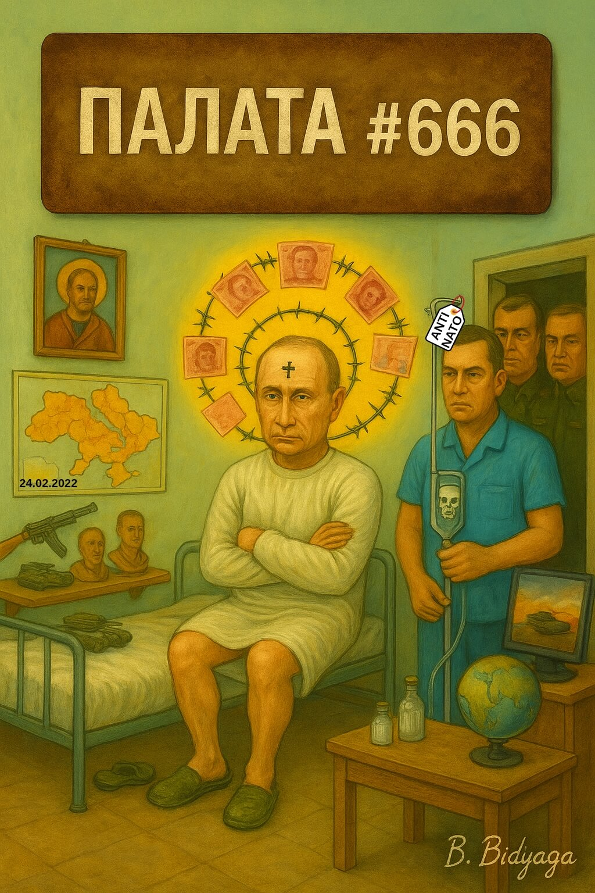
Перед вами — не просто сборник миниатюр. Это — анатомический срез путинской эпохи: православный военный путинизм как форма коллективного безумия.
Здесь — иконы с языческими богами, крещение в окопах, святая вода — внутримышечно. Здесь — патриотизм с носком на члене и боевые дельфины Пентагона. В миниатюрах перед читателем предстает общество, в котором война заменила здравый смысл, «скрепы» — совесть, а православие стало "смазкой" для ракетных установок. Здесь священники благословляют насилие, депутаты торгуют патриотизмом, а школа учит не думать, а рожать и покоряться.
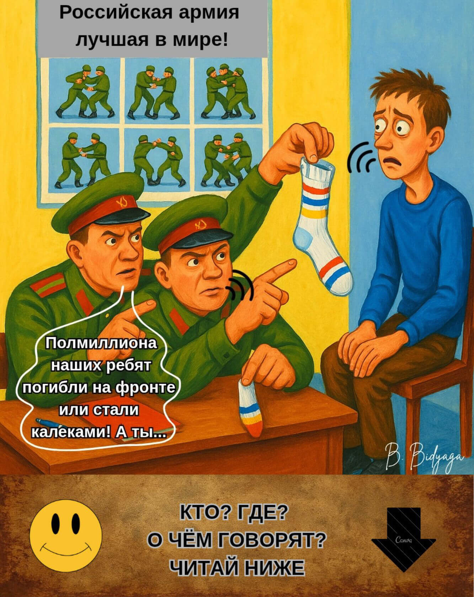
Военкомат в российском городе. За столом сидят два офицера, напротив них — эстрадный исполнитель.
Первый офицер:
— Полмиллиона наших ребят погибли на фронте или стали калеками! А ты — с носком на члене веселишься на "голой" вечеринке?!
Певец:
— Виноват! Завтра же еду в Бахмут… с концертом!
Второй офицер:
— Так точно! Завтра ты едешь в Бахмут. Штурмовиком.
#ПравославныйВоенныйПутинизм
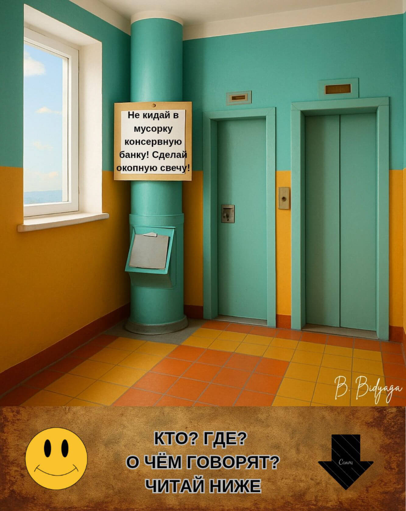
Россия, Москва. Прилифтовой холл типового многоэтажного дома. Объявление на мусоропроводе:
"Не кидай в мусорку консервную банку! Сделай окопную свечу!"
#ПравославныйВоенныйПутинизм
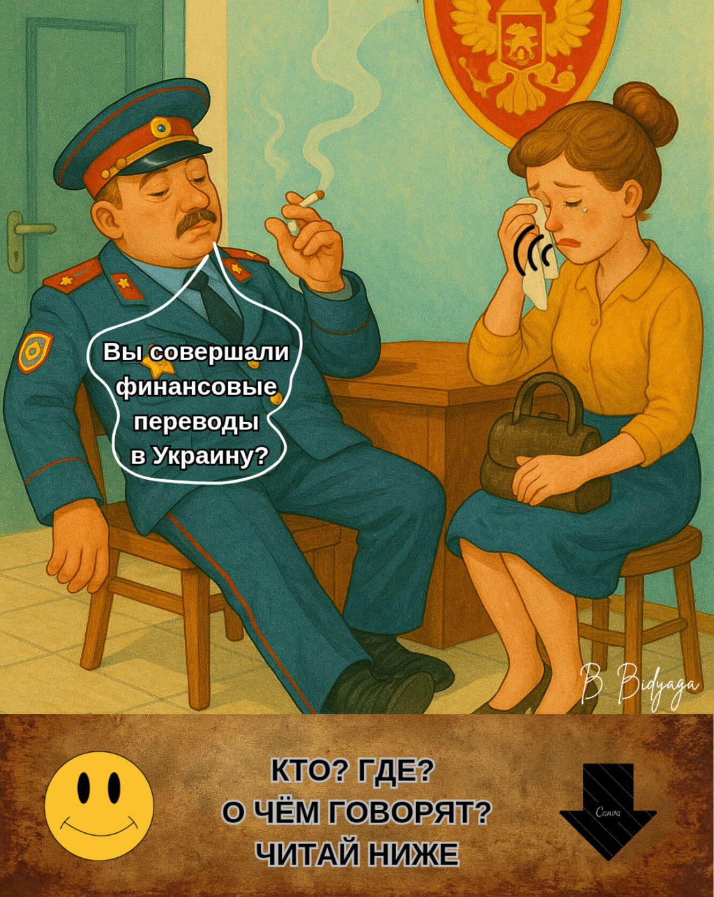
Отдел полиции в российском городе. Офицер допрашивает женщину.
Офицер:
— Вы совершали финансовые переводы в Украину?
Женщина:
— Да, я перевела 50 долларов брату в Киев. Он инвалид, совершенно беспомощный, ему нужны лекарства...
Офицер:
— Поздравляю, мадам, — наговорили на статью. 275-я УК, часть 1. Знаете такую? Финансирование ВСУ. Госизмена!
#ПравославныйВоенныйПутинизм
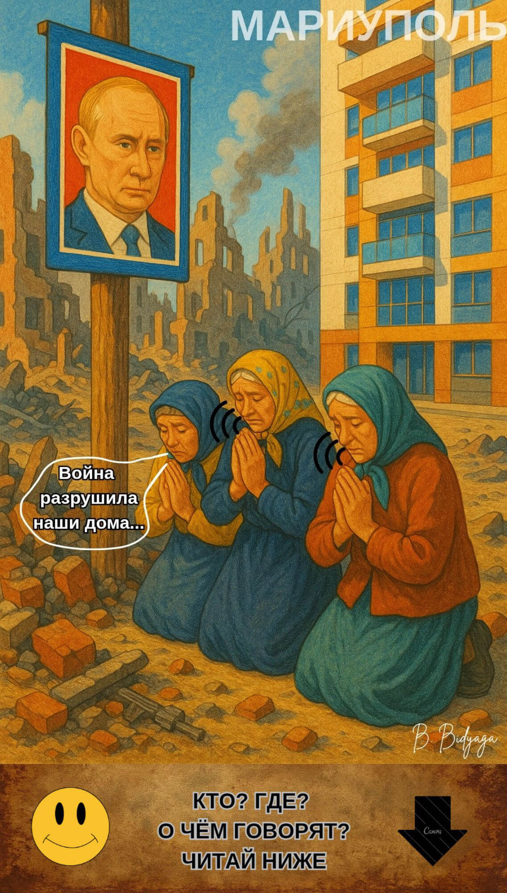
Разрушенный украинский город Мариуполь. На фоне свежевыстроенной многоэтажки три женщины молятся перед портретом Путина.
Первая женщина:
— Война разрушила наши дома. Мы живём на улице.
Вторая женщина:
— Новый дом построили, квартиры — продают.
Третья женщина:
— Мы не можем купить жильё — мы нищие.
Все трое хором:
— Путин, помоги!
#ПравославныйВоенныйПутинизм
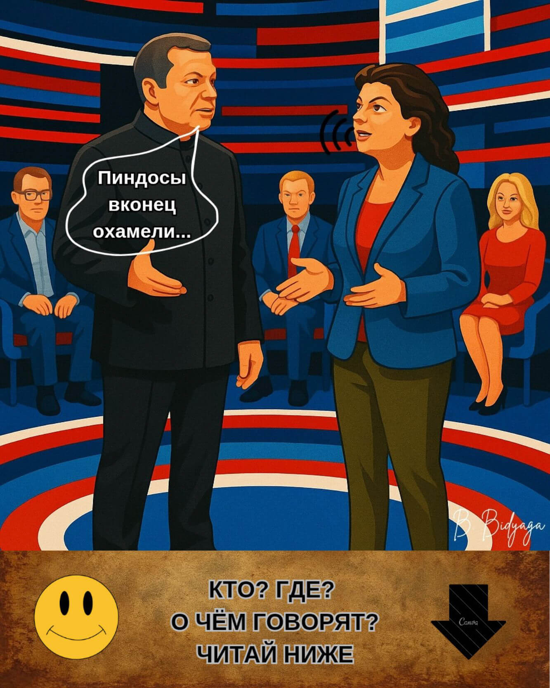
Москва, Россия. Студия известного российского пропагандиста Владимира Соловьева. В. Соловьев беседует с ещё более известной пропагандистской — Маргаритой Симоньян.
Соловьев:
— Пиндосы вконец охамели: перестали нас бояться! Это же черт знает что!
Симоньян:
— Надо их напугать. Вот что мы сделаем. Устроим эффектное ядерное испытание в прямом эфире! Взорвем пару клёвых нейтронных бомбочек над Сибирью. Средней мощности. Чисто символически. Просто два симпатичных ядерных грибочка для всеобщего обозрения. Заодно сэкономим на салюте в День Победы. Пускай не забывают, что мы тут все буйные!
#ПравославныйВоенныйПутинизм
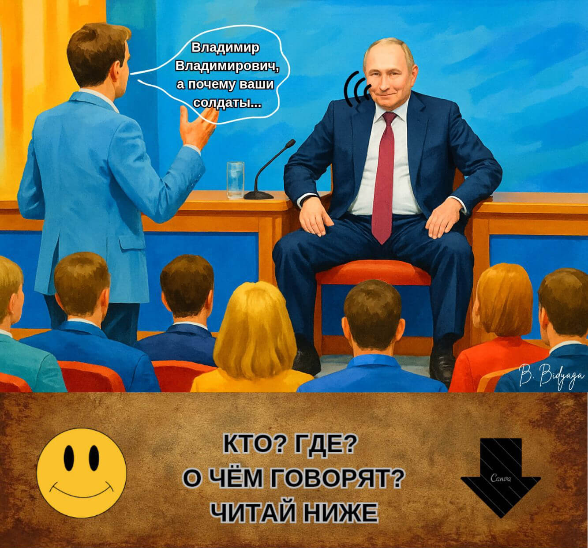
Пресс-конференция президента России Владимира Путина.
Иностранный журналист:
— Владимир Владимирович, а почему ваши солдаты "защищают родину" на территории чужого государства?
Путин:
— Это оптический обман. Запомните раз и навсегда: где ступила нога российского солдата — там территория России. Согласно российскому международному праву.
#ПравославныйВоенныйПутинизм
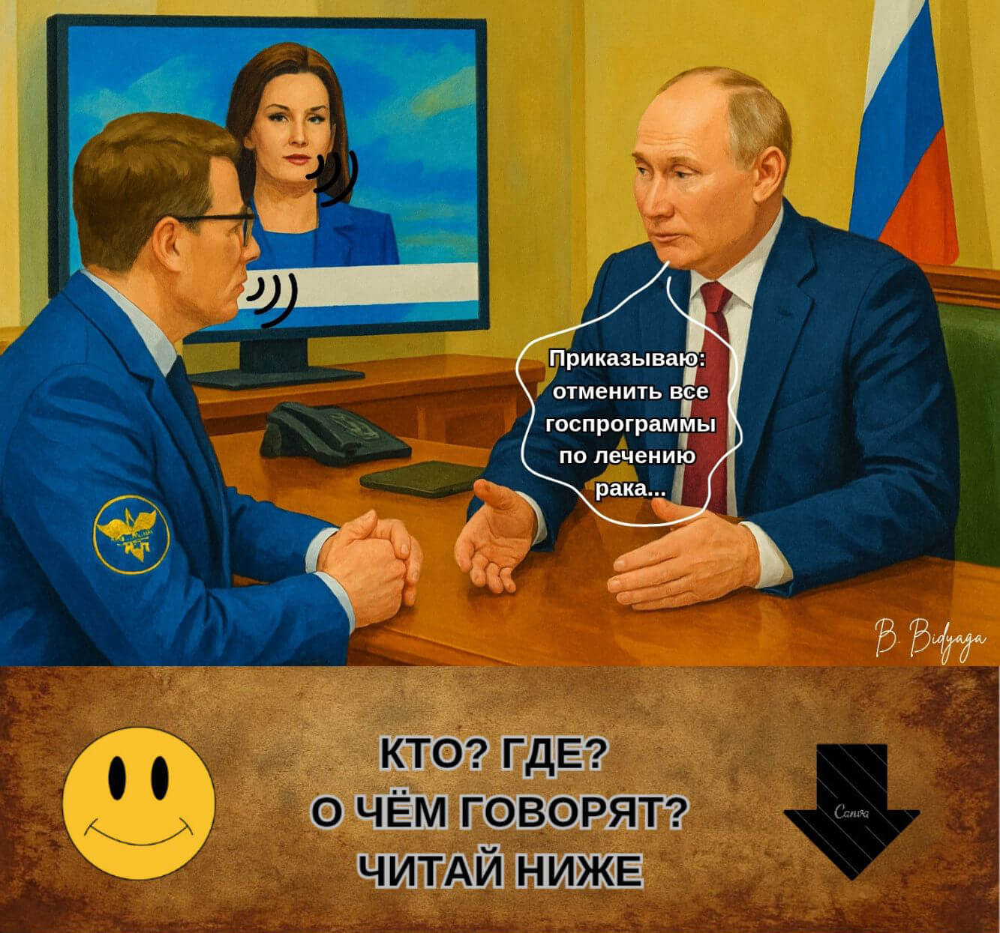
Россия. Москва. Кремль. В кабинете за столом: президент России Владимир Путин и министр здравоохранения России Михаил Мурашко. По телевизору передают новость: в новом российском бюджете расходы на медицину увеличены на 30%.
Путин:
— Приказываю: отменить все госпрограммы по лечению рака и раздачу бесплатных лекарств. Все освободившиеся средства пустить на производство протезов и реабилитацию воинов.
Мурашко:
— Слушаюсь.
#ПравославныйВоенныйПутинизм
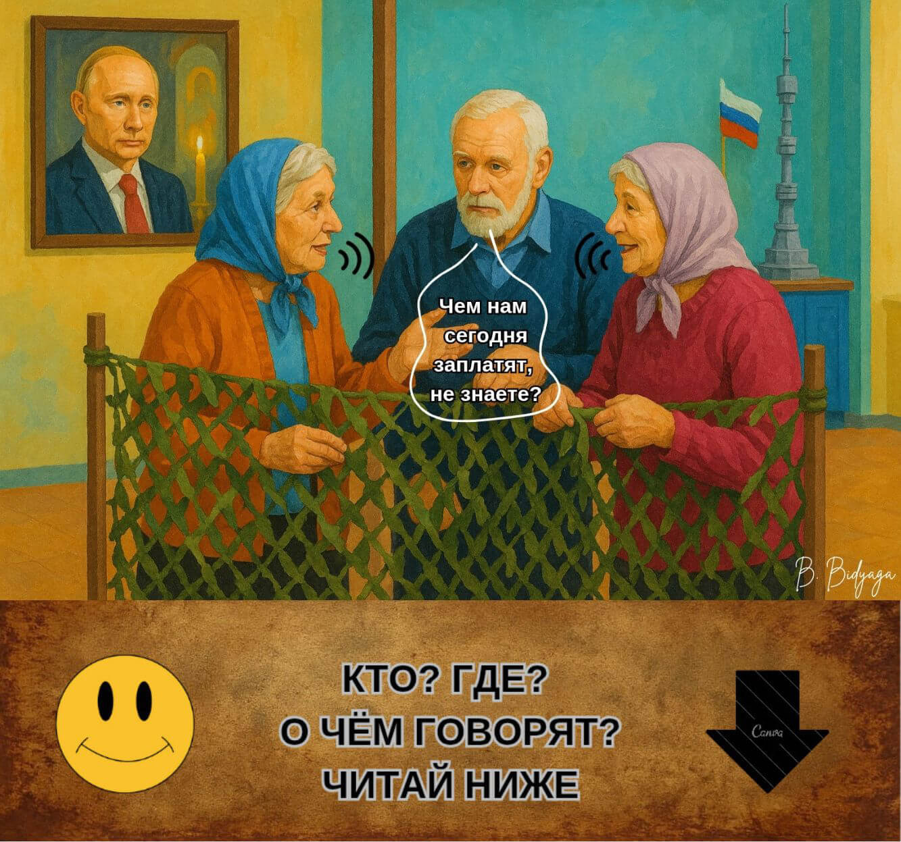
Москва, Россия. Досуговый центр для пенсионеров. Две старушки и дед плетут маскировочную сеть для фронта.
Дед:
— Чем нам сегодня заплатят, не знаете?
Первая старушка:
— Говорят, снова будут раздавать шоколадки "Путин с нами".
Вторая старушка:
— Это не шоколад! Там одна соя!
Дед:
— Вот так всегда: сначала обещают шоколад, а потом подсовывают Путина!
#ПравославныйВоенныйПутинизм
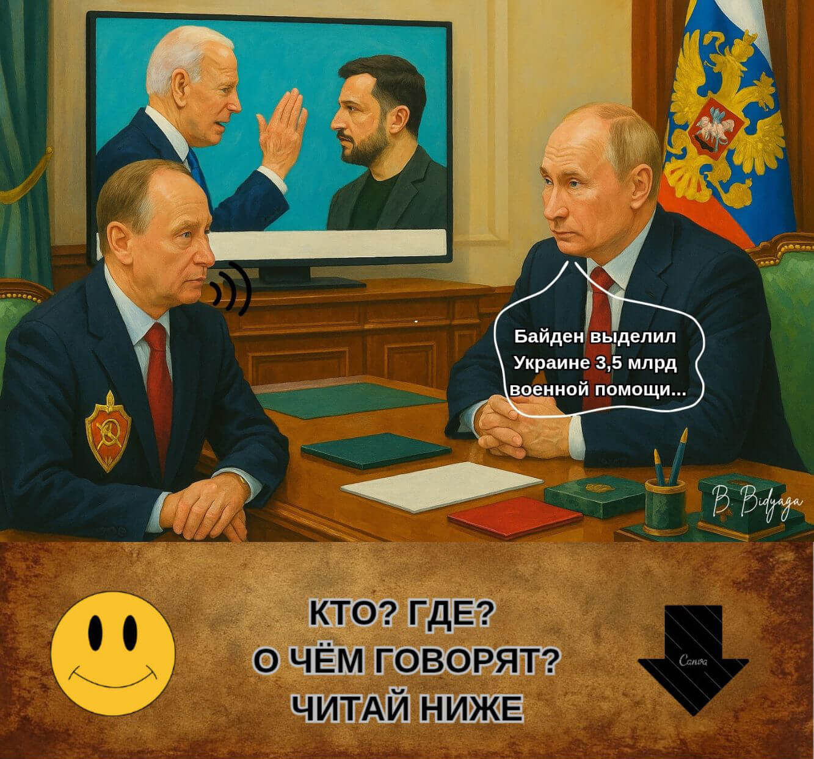
Декабрь 2024 года
Россия. Москва. Кремль. В кабинете за столом: президент России Владимир Путин и помощник президента РФ Николай Патрушев. На экране телевизора президент США Джо Байден пожимает руку президенту Украины Владимиру Зеленскому.
Путин (с холодной яростью):
— Байден выделил Украине 3,5 млрд военной помощи. От его хаймарсов у меня по всей стране полыхают НПЗ. Это предел всему. Мы не обязаны это терпеть. Дайте асимметричный ответ.
Патрушев:
— Слушаюсь. Устроим «огонь Прометея» над его любимым штатом. Там как раз резиденции его отпрыска и этой идиотки Камалы Харрис. Сам виноват — мы его предупреждали!
#ПравославныйВоенныйПутинизм
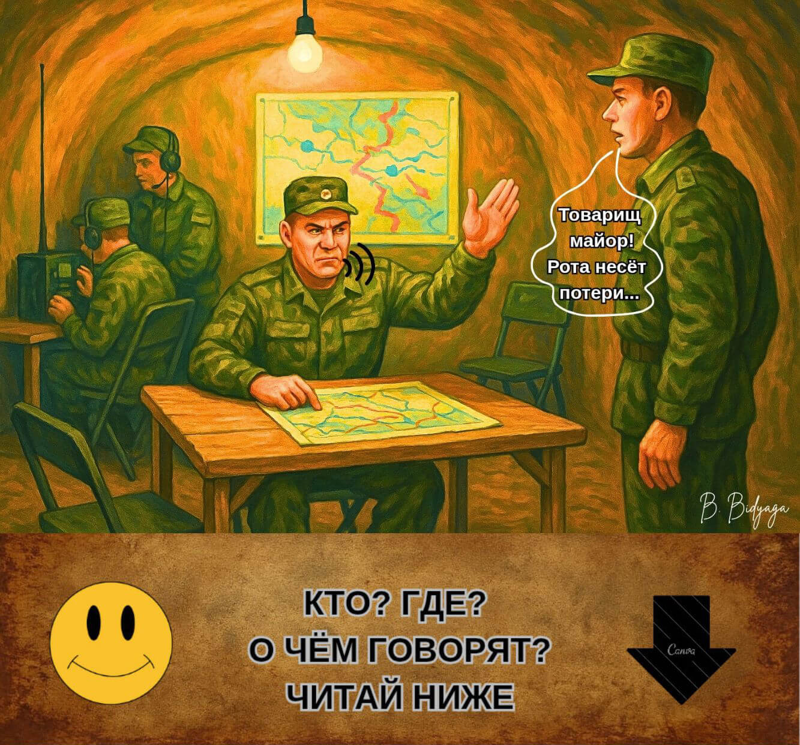
Российско-украинский фронт. Штабная землянка. Диалог командира с сержантом.
Сержант:
— Товарищ майор! Рота несёт потери: семеро раненых кричат в нейтралке. Эвакуировать?
Командир (не отрываясь от ведомости):
— Зачем? Пусть числятся «в резерве». Будем довольствие за них получать. Тут главное — чтобы сходилась списочная численность.
#ПравославныйВоенныйПутинизм
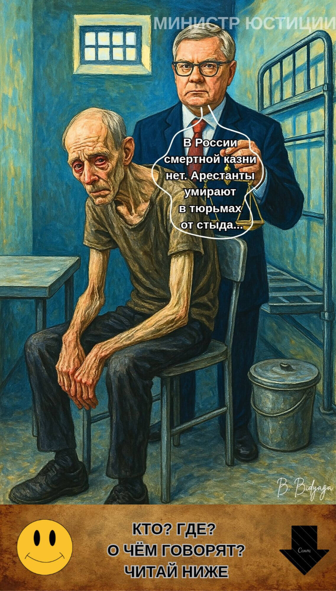
Типичная российская тюремная камера. Крайне истощенный болезненного вида арестант. За его спиной стоит министр юстиции России Константин Чуйченко с символом богини Фемиды в руках.
Чуйченко:
— В России смертной казни нет. Арестанты умирают в тюрьмах добровольно — от стыда и угрызений совести. Внедряется госпрограмма гуманной стимуляции добровольного ухода:
— капельницы раскаяния,
— диета "пробуждение совести" (тюремный стол №1),
— ароматерапия "воспитание патриотизма" (открытая параша в камерах ШИЗО).
Российская Фемида — самая гуманная в мире!
#ПравославныйВоенныйПутинизм
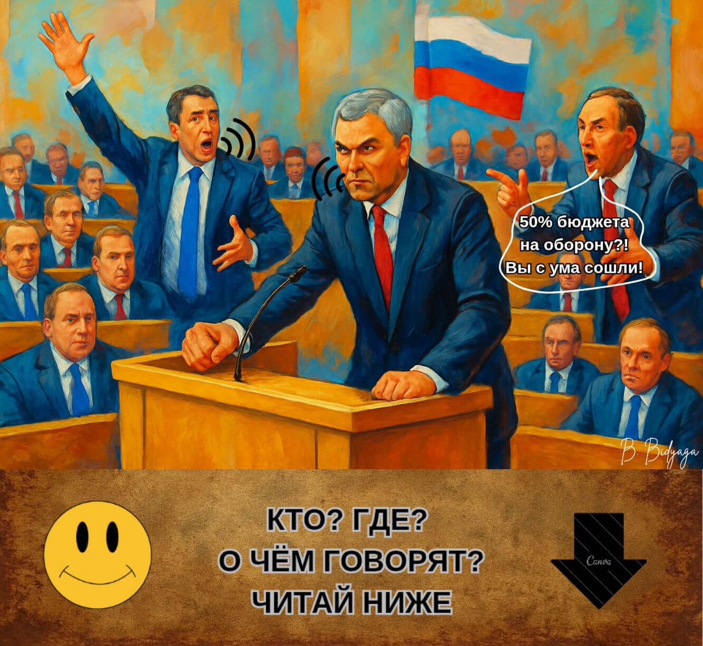
Россия, Москва. Зал заседаний Госдумы РФ. Обсуждается бюджет.
Первый депутат:
— 50% бюджета на оборону?! Да вы с ума сошли! А медицина? А наука? Образование?!
Второй депутат:
— Наша цель — демилитаризация Украины! Приходится идти на жертвы! Пушки на 3D-принтере не напечатаешь!
Первый депутат:
— А по факту выходит — милитаризация России! Скоро мы все окажемся в камуфляже!
Вячеслав Володин, спикер Госдумы:
— Прения окончены! Бюджет утверждён единогласно!
#ПравославныйВоенныйПутинизм
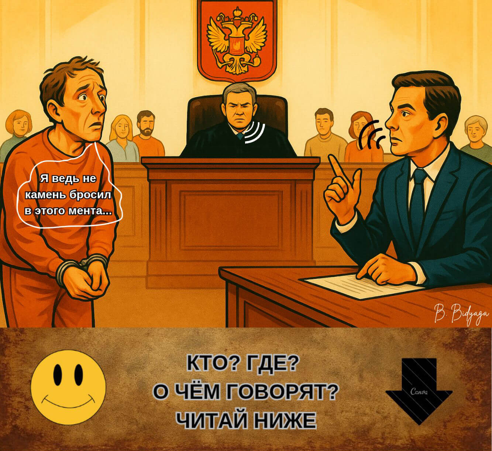
Зал заседаний российского суда: подсудимый, защитник, судья. Диалог.
Подсудимый:
— Я ведь не камень бросил в этого мента — а всего лишь пластиковый стаканчик!
Защитник:
— Считаем приговор чрезмерно суровым! Требуем смягчения наказания!
Судья:
— Не вижу ни малейших оснований. Налицо неоконченное преступление: сначала стаканчик, потом — камень. Налицо визуальный призыв к терроризму. Налицо публичная демонстрация методов террора. Приговор остаётся в силе!
#ПравославныйВоенныйПутинизм
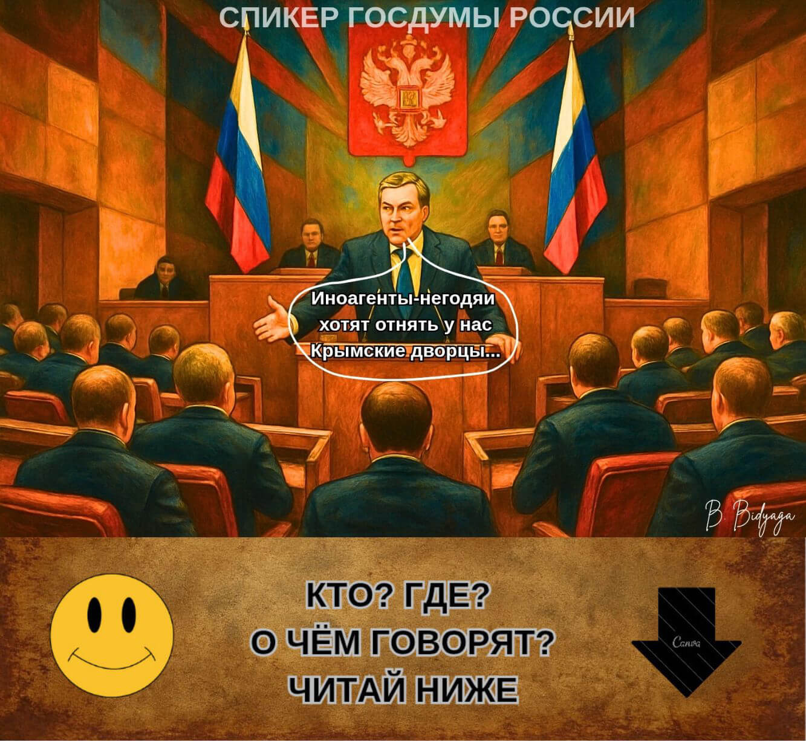
Россия, Москва. Зал заседаний Госдумы РФ. Спикер Думы Вячеслав Володин произносит перед депутатами пламенную речь.
Володин (пафосно):
— Иноагенты-негодяи хотят отнять у нас:
• Крымские дворцы (символ величия России!)
• Шахты Донбасса (затоплены, но всё равно наши!)
• Пляжи Мариуполя (оплачены нашей кровью!)
• Мелитопольскую черешню (наш стратегический священный фрукт!)
Дадим негодяям отпор! Принимаем закон о превентивной конфискации:
• Квартиры — за крамольные призывы.
• Дачи — за клеветнические измышления.
• Счета — за непатриотичные фантазии.
Они имеют наглость желать — мы имеем власть конфисковать!
#ПравославныйВоенныйПутинизм
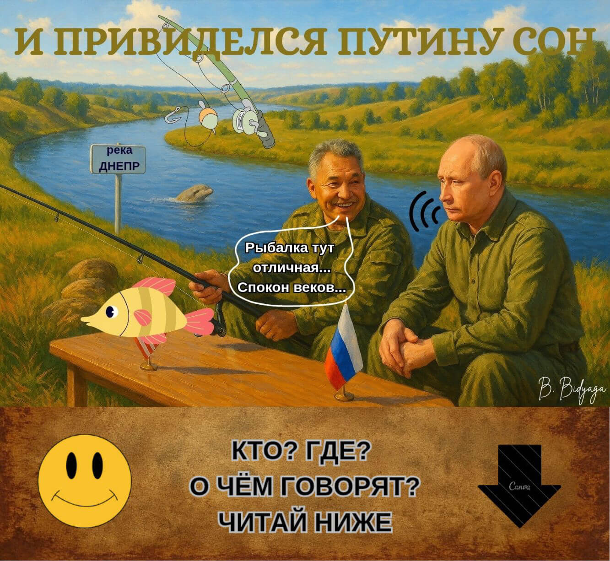
Президенту России Владимиру Путину снится сон. Будто бы он сам и министр обороны РФ Сергей Шойгу рыбачат на Днепре.
Шойгу:
— Рыбалка тут отличная... Спокон веков... Наша речка, древнерусская... Волга-матушка да Днепр-батюшка — от них вся вода на Руси пошла... Как сказал великий русский поэт: "Чуден Днепр при тихой погоде..."
Путин:
— Да-а. Между прочим, тысячу лет назад на этом самом месте Князь Владимир поймал гигантского Окуня весом в 3 пуда! Об этом есть запись в Повести Временных Лет!
(Путин просыпается: моросит дождь, над Москвой-рекой стелется гадкий серый туман. Путин набирает номер Мединского.)
Путин:
— Владимир Ростиславович? Срочно внесите Окуня в новый учебник истории! Да, того самого… Как символ… русской… великодержавности. И чтобы с иллюстрацией!
#ПравославныйВоенныйПутинизм
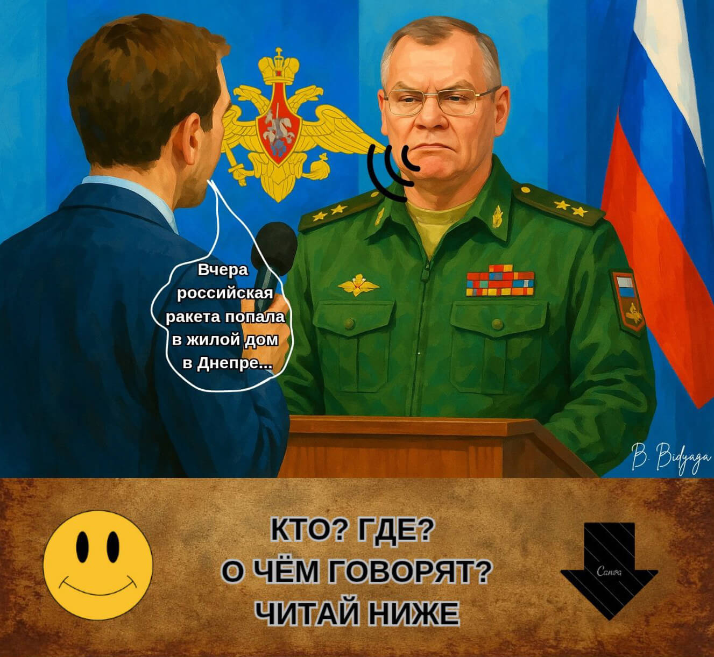
Пресс-конференция Минобороны России. На вопросы отвечает генерал Конашенков, глава департамента информации.
Корреспондент:
— Вчера российская ракета попала в жилой дом в Днепре. Погибла украинская семья. Как вы прокомментируете этот факт?
Генерал Конашенков:
— Коротко и ясно, как истинный патриот России. Российская армия никогда не бомбила и никогда не будет бомбить гражданские объекты. По оперативным данным разведки, это был подпольный цех по пошиву военной формы.
Корреспондент:
— Среди погибших есть дети...
Генерал Конашенков:
— Они учились вышивать шевроны.
#ПравославныйВоенныйПутинизм
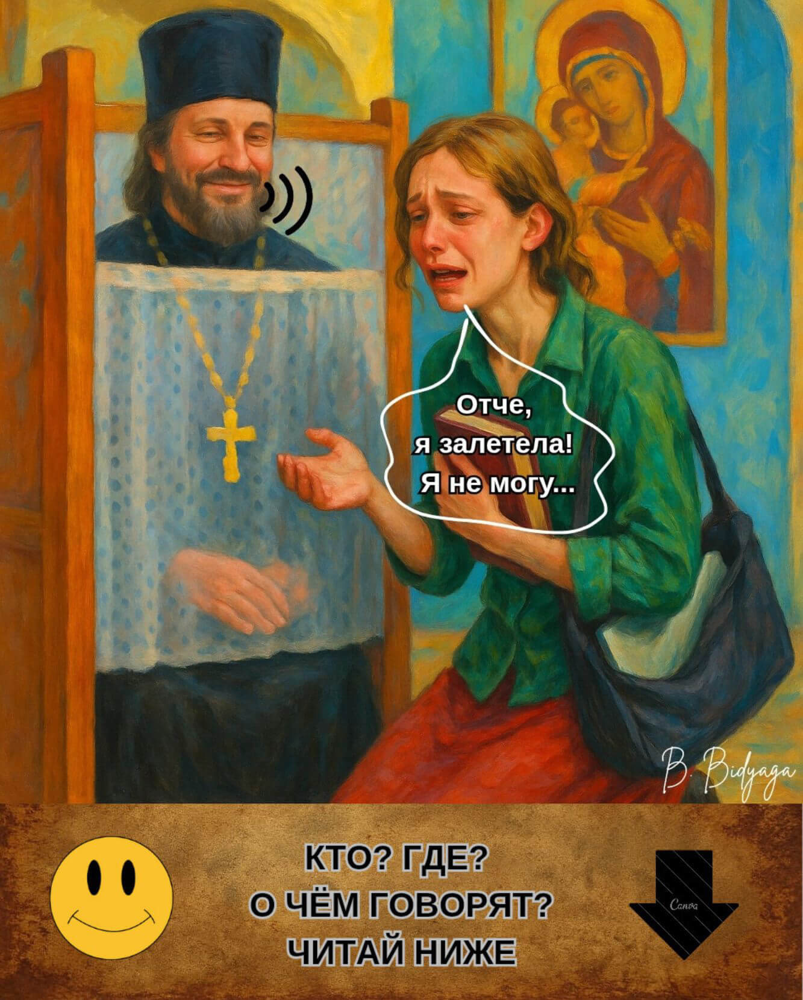
Россия. Исповедальня в православном храме. За ширмой — священник. Молодая девушка исповедуется сквозь рыдания.
Девушка:
— Отче, я залетела! Я не могу! Что мне делать? Я на третьем курсе, мне надо закончить институт. Кто будет воспитывать ребенка?
Священник:
— Женщине не нужно образование. Так учит Церковь и свидетельствуют святые отцы. Предназначение женщины — рожать и молчать. Твоя карьера — это послушание и материнство. И получишь награду на Небесах. Вот и последний, наш, Архиерейский Собор постановил: «Женское образование — от лукавого».
#ПравославныйВоенныйПутинизм
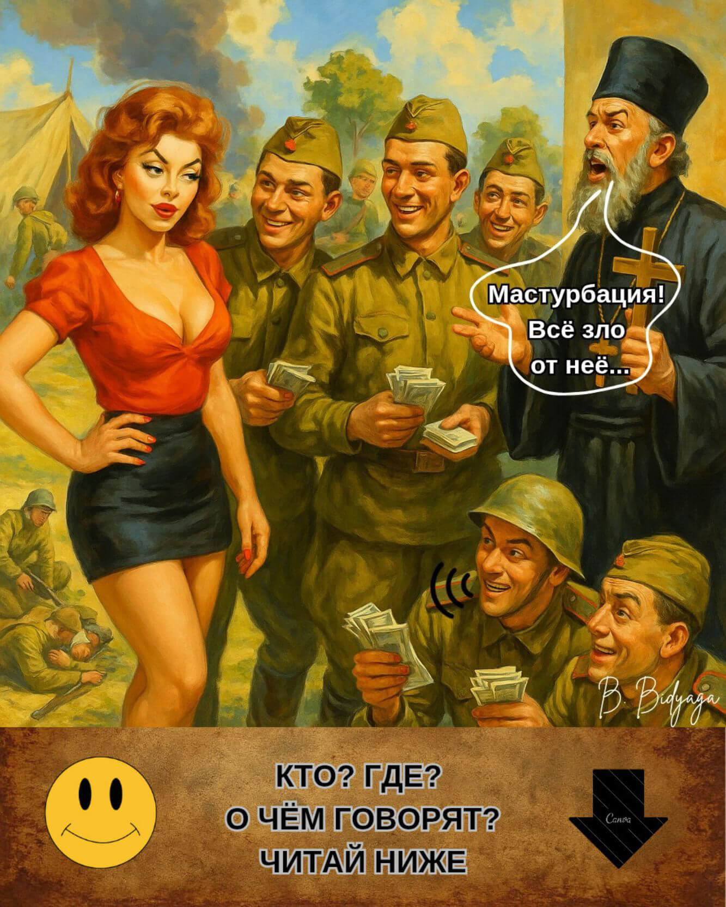
Российско-украинский фронт. Российские дальние позиции. Солдаты торгуются с проституткой. Неподалёку проповедует священник.
Священник:
— Мастурбация! Всё зло от неё! Из-за мастурбации началась эта война! Опомнитесь, воины! Прекратите мастурбировать! В вашей руке должно быть оружие, а не член!
Солдат:
— Знал бы ты, поп, какая здесь наценка на шлюх, — молчал бы в тряпочку!
#ПравославныйВоенныйПутинизм
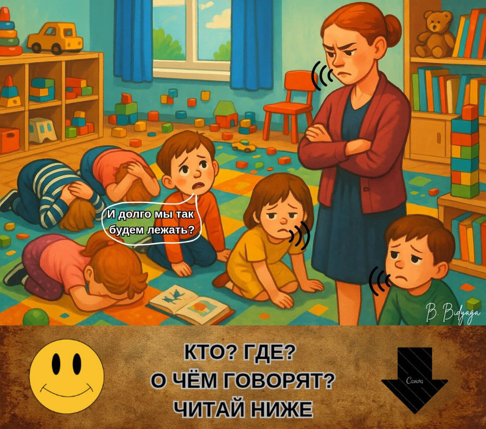
Детский сад в российском городе. Воздушная тревога. Детей заставили лежать лицом в пол.
Первый ребенок:
— И долго мы так будем лежать?
Воспитательница:
— До тех пор пока наши не собьют все вражеские дроны.
Второй ребенок:
— Значит, долго...
Третий ребёнок:
— А давайте все улетим на Луну!
#ПравославныйВоенныйПутинизм
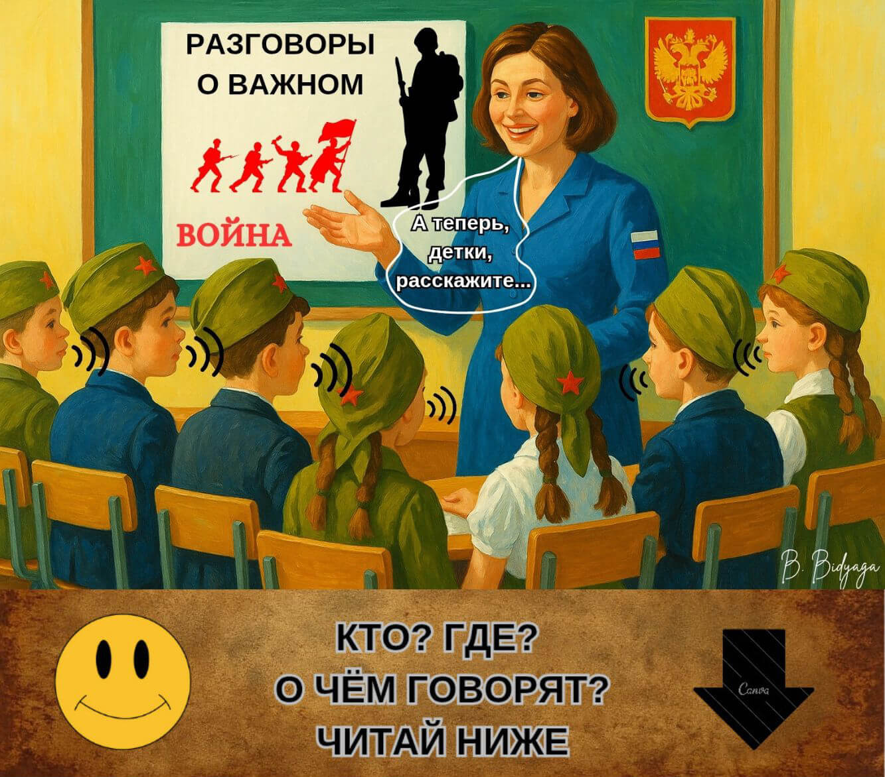
Школа в российском городе. Обязательный урок "Разговоры о важном".
Учительница:
— А теперь, детки, расскажите, кем вы хотите стать, когда вырастете.
Толя:
— Я стану лётчиком, буду бомбить вражеские города.
Маша:
— А я — медсестрой, буду выносить раненых с поля боя.
Гена:
— А я стану генералом, буду сидеть в штабе и отдавать приказы.
Учительница:
— А ты что молчишь, Иванушка? Скажи нам, кем ты хочешь стать?
Иванушка (со вздохом):
— А я, Елена Петровна, в психушке буду сидеть. Подальше от этого дурдома.
#ПравославныйВоенныйПутинизм
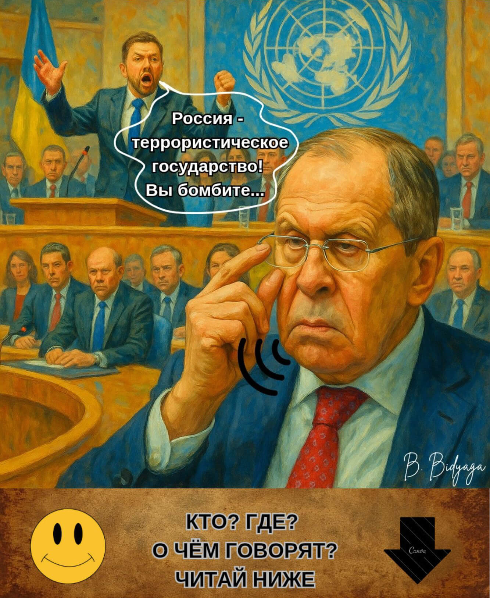
Заседание Совбеза ООН.
Представитель Украины:
— Россия — террористическое государство! Вы бомбите жилые дома, убиваете детей, насилуете женщин, грабите жилища, нарушаете законы войны. Придёт время — за всё ответите! Россию — под суд!
Сергей Лавров, глава МИД РФ:
— Дебилы, бл@ть!
#ПравославныйВоенныйПутинизм
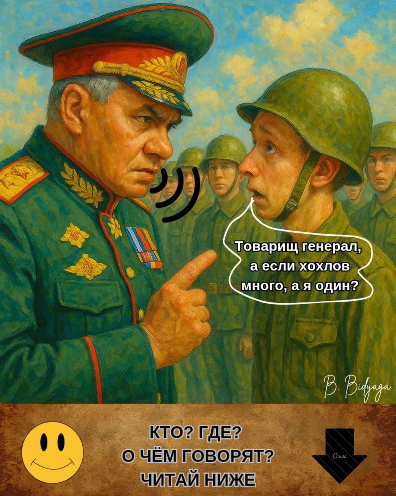
Российско-украинский фронт. Российский тыл. Построение на плацу. Министр обороны РФ Сергей Шойгу стоит перед строем солдат.
Солдат:
— Товарищ генерал, а если хохлов много, а я один?
Шойгу:
— Ты должен отстреливаться до последнего патрона, сынок. Если, не дай бог, тебя возьмут живым, — это статья. Добровольная сдача в плен.
Солдат:
— Но я не хочу умирать!
Шойгу:
— Твоя жизнь оплачена. Щедро. Без сдачи. Выполняй свою часть — без сдачи.
#ПравославныйВоенныйПутинизм
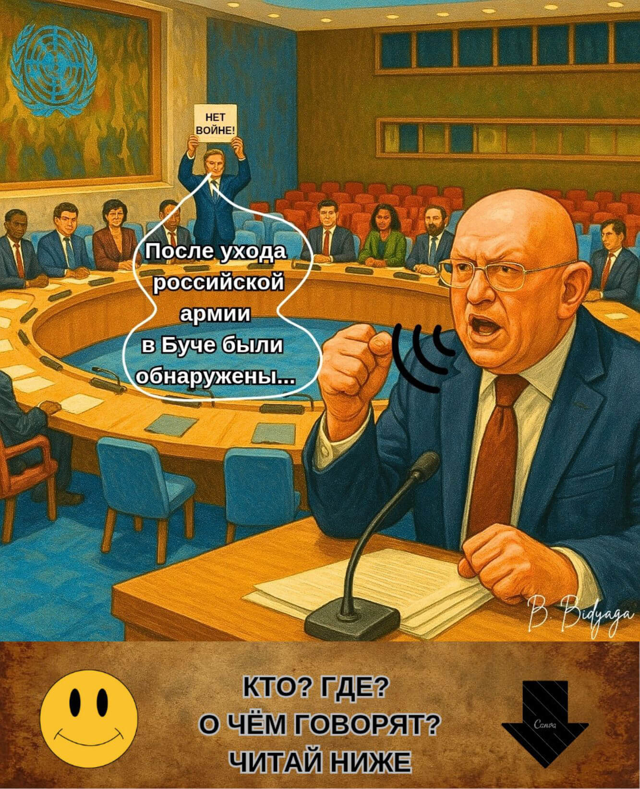
Заседание Совбеза ООН.
Представитель Украины:
— После ухода российской армии в Буче были обнаружены сотни тел мирных жителей. Их убили путинские солдаты!
Представитель России:
— Наглая ложь! Не было никаких трупов! Украинская инсценировка! Драмтеатр военных действий!
#ПравославныйВоенныйПутинизм
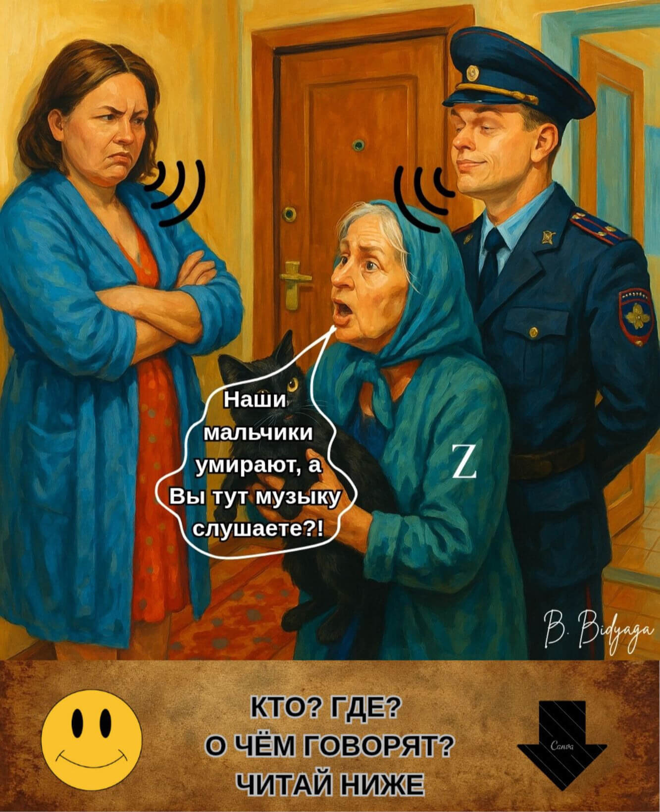
Россия, Москва. Диалог в квартире типичного многоквартирного дома: хозяйка, соседка и полицейский.
Соседка:
— Наши мальчики умирают, а Вы тут музыку слушаете! Дискредитация!
Хозяйка:
— Я не виновата, что эти идиоты пошли на фронт. Я их за руку не тянула, в военкомат не волокла! Миллионов захотелось. Теперь лежат.
Полицейский:
— Плюс возбуждение ненависти и вражды по признаку принадлежности к армии РФ! Вам это влетит в копеечку!
#ПравославныйВоенныйПутинизм
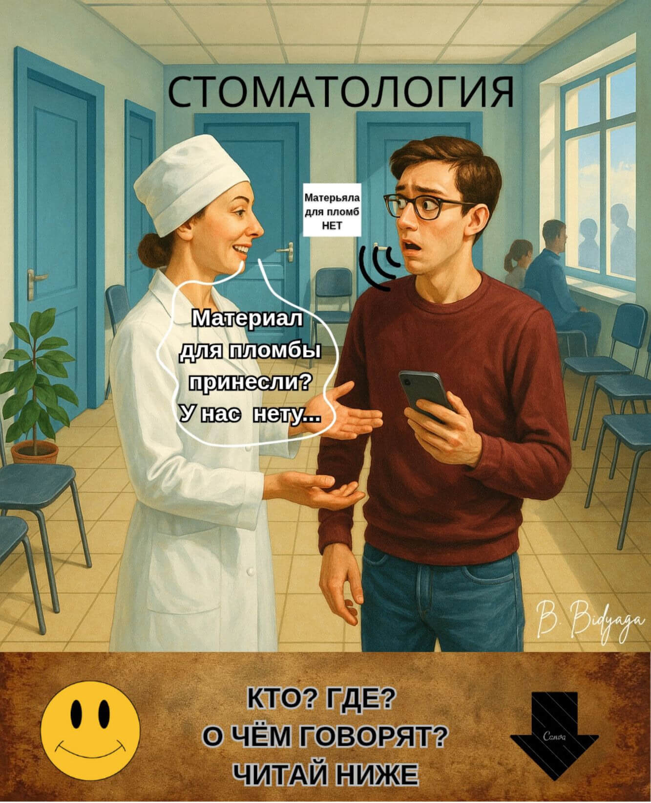
Стоматологическая клиника в российском городе. На двери кабинета объявление: "Матерьяла для пломб НЕТ." В холле врач-стоматолог беседует с пациентом.
Врач:
— Материал для пломбы принесли? У нас нету. Закончился. Санкции. Сами знаете. Сейчас в наличии только строительный песко-бетон С-300. Гарантия — месяц. Если, конечно, не умрёте сразу.
Пациент:
— Знаете, я, пожалуй, пойду. Тем более — зуб больше не болит. Как-то, знаете, вдруг все само прошло.
#ПравославныйВоенныйПутинизм
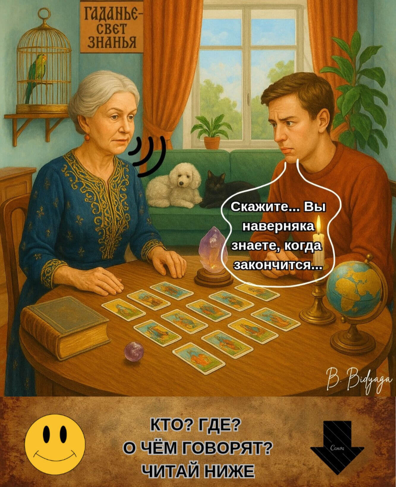
Молодой мужчина в студии у гадалки в российском городе.
Мужчина:
— Скажите... Вы наверняка знаете, когда закончится эта война?
Гадалка:
— Конечно. Сейчас сочтём... Сегодня у нас... 25.05.25. Умножаем... 25х5х25... Через 3125 дней.
#ПравославныйВоенныйПутинизм
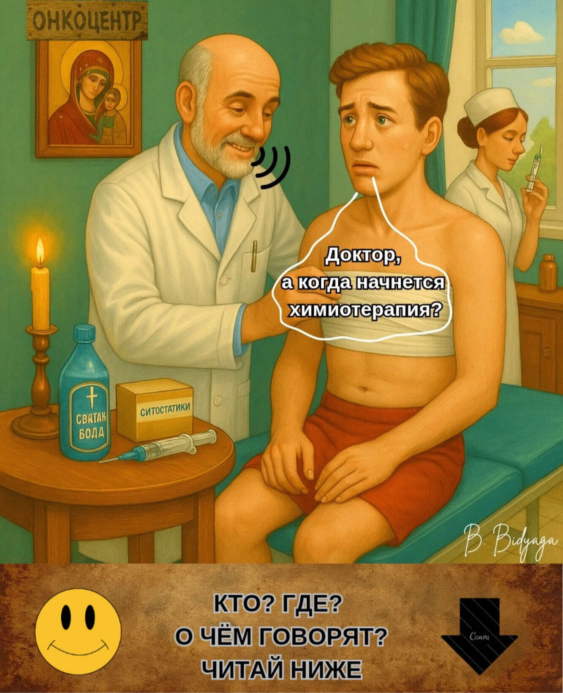
Онкологический диспансер в российском городе. Кабинет врача. Пациент сидит на кушетке, врач бинтует ему грудную клетку.
Пациент:
— Доктор, а когда начнется химиотерапия?
Врач (равнодушно):
— Не в этой жизни. Бюджеты срезали. Так... повязочку потуже — замедляем метастазы. Сестра! Инъекцию святой воды! Держитесь! Мы за вас молимся.
#ПравославныйВоенныйПутинизм
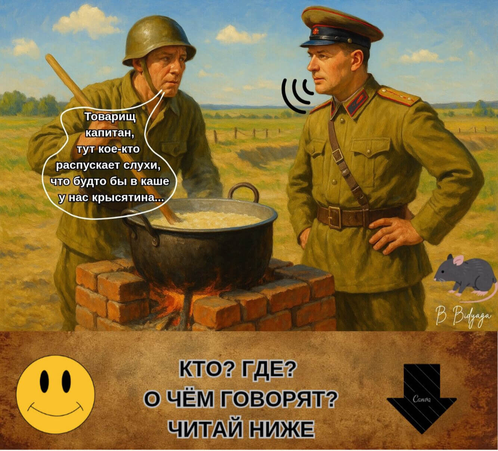
Российско-украинский фронт. Российские позиции. Полевая кухня. Диалог командира и повара.
Повар:
— Товарищ капитан, тут кое-кто распускает слухи, что будто бы в каше у нас крысятина, а всю тушёнку разворовал командный состав.
Капитан:
— Тушёнка — это суррогат. Настоящему солдату нужна настоящая еда. А клеветникам даём отпор: мясо вымачиваем в уксусе, в кашу ложим побольше перца и жареный лучок.
#ПравославныйВоенныйПутинизм
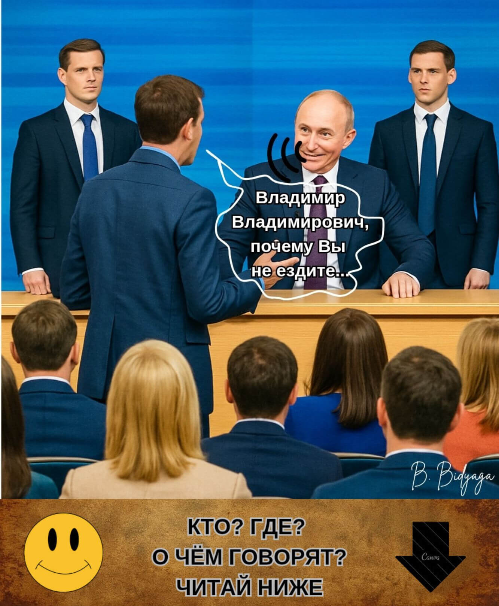
Пресс-конференция президента России Владимира Путина.
Корреспондент:
— Владимир Владимирович, а почему Вы не ездите на передовую, как украинский президент?
Путин:
— Зеленский нелегитимен. Если его убьют — невелика потеря. К тому же он ищет дешёвой популярности. Мне это не нужно — у меня рейтинг и без того высокий.
#ПравославныйВоенныйПутинизм
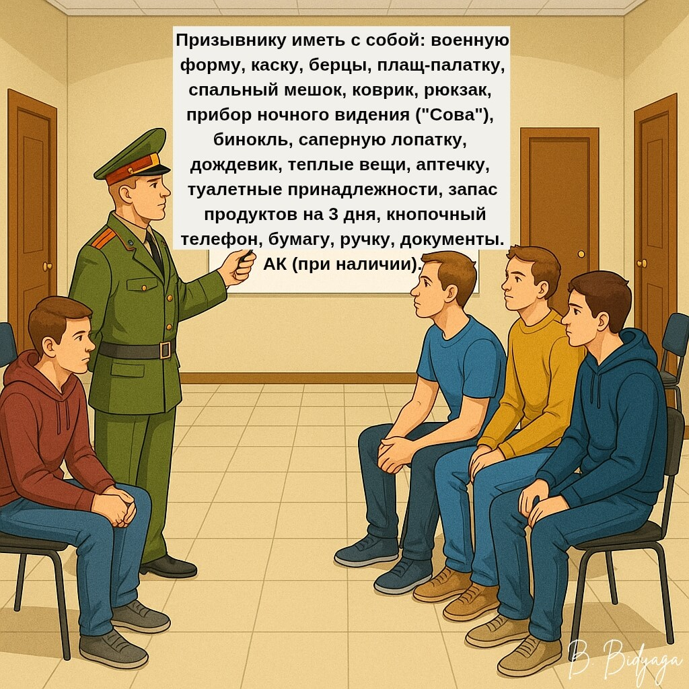
Военкомат в российском городе. На стене висит большой плакат:
Призывнику иметь с собой:
военную форму, каску, берцы, плащ-палатку, спальный мешок, коврик,
рюкзак, прибор ночного видения ("Сова"), бинокль, саперную лопатку,
дождевик, теплые вещи, аптечку, туалетные принадлежности, запас продуктов на 3 дня, кнопочный телефон, бумагу, ручку, документы, АК (при наличии).
#ПравославныйВоенныйПутинизм
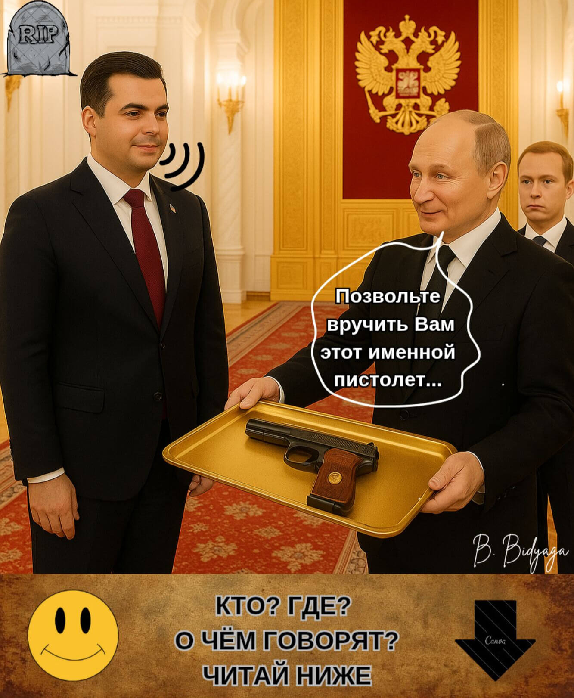
Россия. Москва. Георгиевский зал Большого кремлёвского дворца. Президент России Владимир Путин вручает награду чиновнику.
Путин:
— Позвольте вручить Вам этот именной пистолет за заслуги перед отечеством. Он... приободрит Вас в трудную минуту. Не даст оступиться. И, надеюсь, послужит решением в безвыходной ситуации.
Чиновник:
— Служу России! Готов доказать свою преданность ценой собственной жизни!
#ПравославныйВоенныйПутинизм
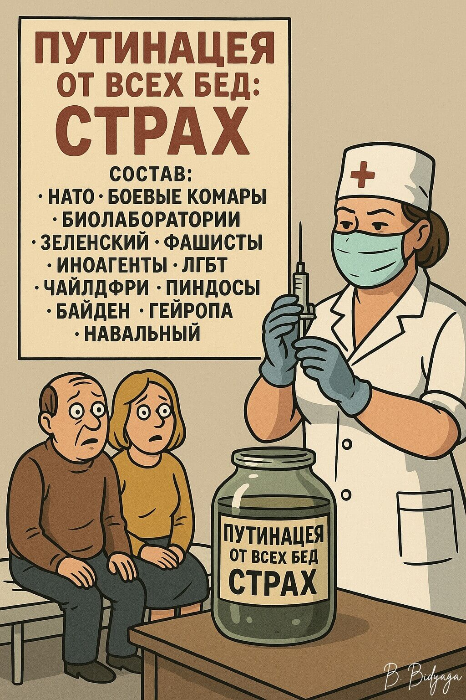
ПУТИНАЦЕЯ®
Комбинированный препарат широкого спектра действия. Активен в отношении всех оппозиционных микроорганизмов...
Фармакологическое действие:
Вызывает устойчивое чувство страха, приступы агрессии и патриотического возбуждения. Подавляет центры критического мышления, эмпатии и чувства вины.
Состав:
NATO, боевые комары, биолаборатории, Зеленский, фашисты, иноагенты, ЛГБТ, Чайлдфри, пиндосы, Байден, Гейропа, Навальный, "распятые мальчики в трусиках".
Показания к применению:
• Высокий уровень самосознания
• Доверие и жалость к врагам народа
• Потребность в ответах на риторические вопросы
Доказанный терапевтический эффект:
• Хроническая вера в телевидение
• Аллергия на правду
• Агрессивно-патриотический экстаз
Передозировка:
• Нет данных
Противопоказания:
• Не зафиксированы
#ПравославныйВоенныйПутинизм
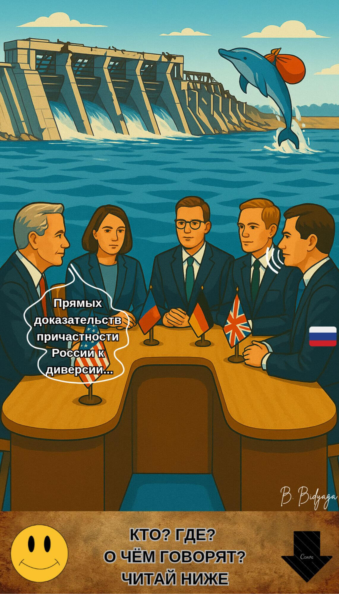
Заседание международной комиссии по вопросу подрыва плотины Каховской ГЭС в Украине.
Представитель Запада:
— Прямых доказательств причастности России к диверсии нет. Но косвенные улики вызывают определенные вопросы...
Представитель России:
— Не надо грязи! ДНК-экспертиза установила: плотину взорвали боевые дельфины НАТО!
#ПравославныйВоенныйПутинизм
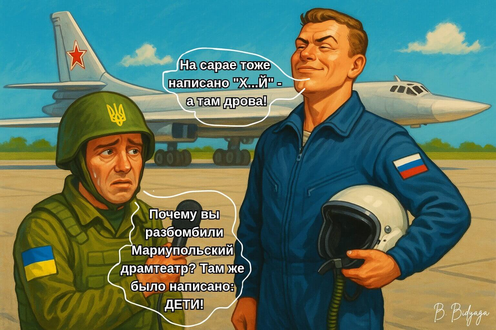
Российский военный аэродром. Диалог российского летчика с представителем украинских СМИ.
Украинец:
— Почему вы разбомбили Мариупольский драмтеатр? Там же было написано: "ДЕТИ!"
Летчик:
— На сарае тоже написано "Х...й" — а там дрова!
#ПравославныйВоенныйПутинизм
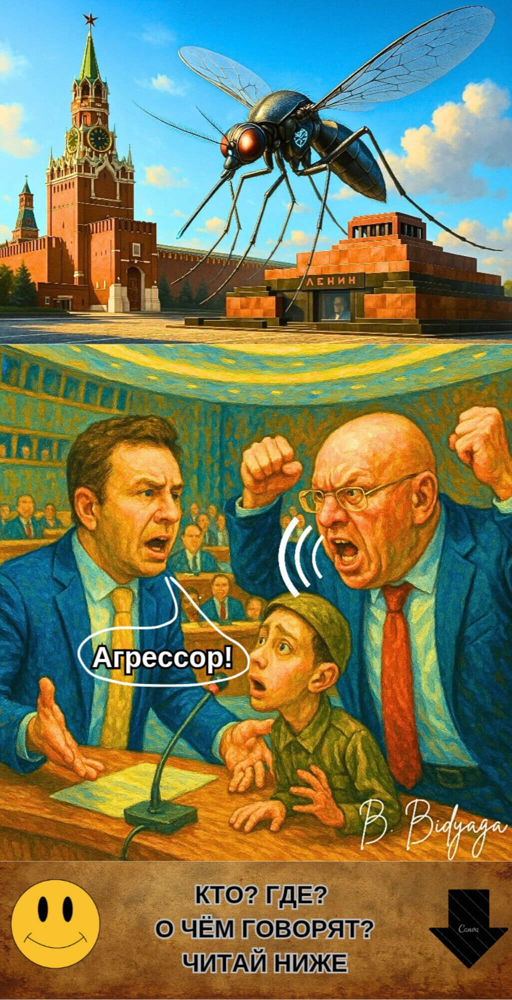
Заседание Совбеза ООН.
Представитель Украины (обращаясь к представителю России):
— Агрессор!
Представитель России:
— Не передергивайте факты! Боевые комары НАТО вероломно вторглись в Россию с территории Украины! Мы лишь провели спецоперацию по дезинсекции!
#ПравославныйВоенныйПутинизм
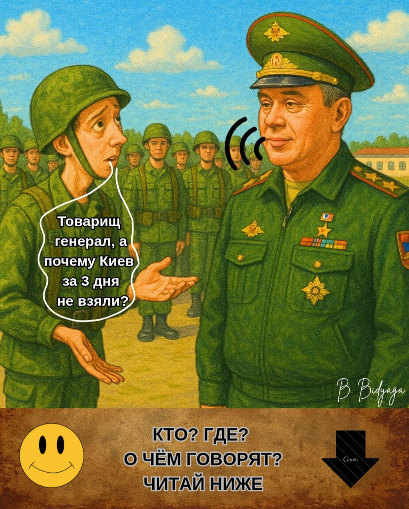
Российская воинская часть. Построение на плацу. Генерал стоит перед строем солдат.
Солдат:
— Товарищ генерал, а почему Киев за три дня не взяли?
Генерал:
— Это была учебная атака. Акт гуманизма и доброй воли. Мы показали противнику свою огневую мощь — и вернулись на более лучшие позиции.
#ПравославныйВоенныйПутинизм
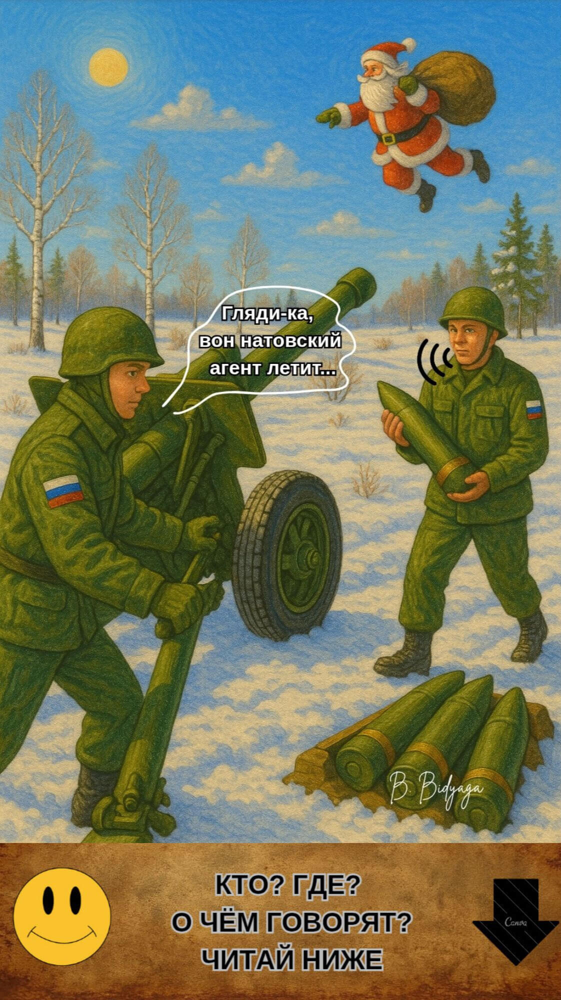
Канун Рождества. Российские солдаты на боевой позиции. По небу летит Санта Клаус с мешком подарков.
Первый солдат:
— Гляди-ка, вон натовский агент летит — под прикрытием!
Второй солдат:
— Заряжаем! Быстро! Да целься в голову. Главное — не повреди мешок! А то без подарков останемся.
#ПравославныйВоенныйПутинизм
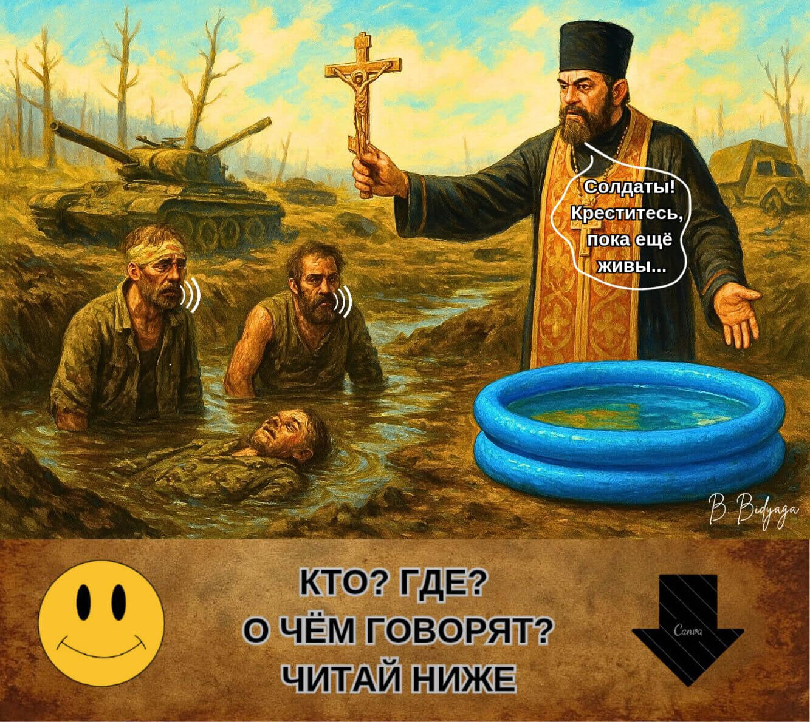
Российско-украинский фронт. Российские позиции. Священник агитирует солдат креститься в походной "купели".
Священник:
— Солдаты! Креститесь, пока ещё живы! Не то попадёте в ад!
Первый солдат:
— Мы и так в аду.
Второй солдат:
— Давай! Соглашайся! Хотя бы помоемся!
#ПравославныйВоенныйПутинизм
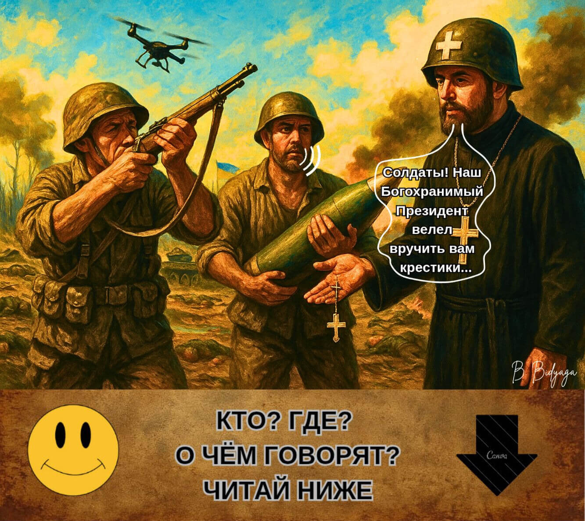
Российско-украинский фронт. Российские дальние позиции. Священник предлагает солдатам оберег в виде "президентского" нательного крестика.
Священник:
— Солдаты! Наш богохранимый Президент велел вручить вам крестики со своими инициалами. Это лучшая защита от вражеской пули.
Солдат:
— А что — его уже распяли?
#ПравославныйВоенныйПутинизм
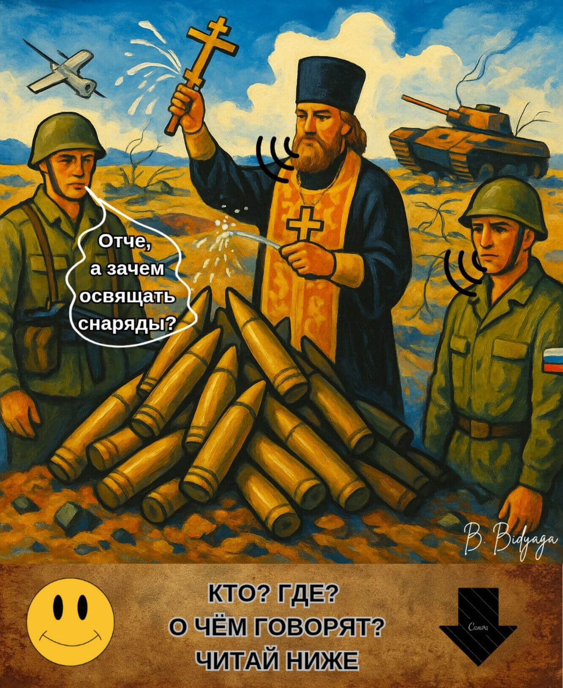
Российско-украинский фронт. Российские дальние позиции. Обряд освящения боеприпасов.
Первый солдат:
— Отче, а зачем освящать снаряды?
Священник:
— Чтобы били точно в цель, сын мой!
Второй солдат (мрачно):
— Теперь понятно, почему мы всё время мажем.
Первый солдат (с энтузиазмом):
— Ну, теперь-то наши пушки будут стрелять без промаха!
#ПравославныйВоенныйПутинизм
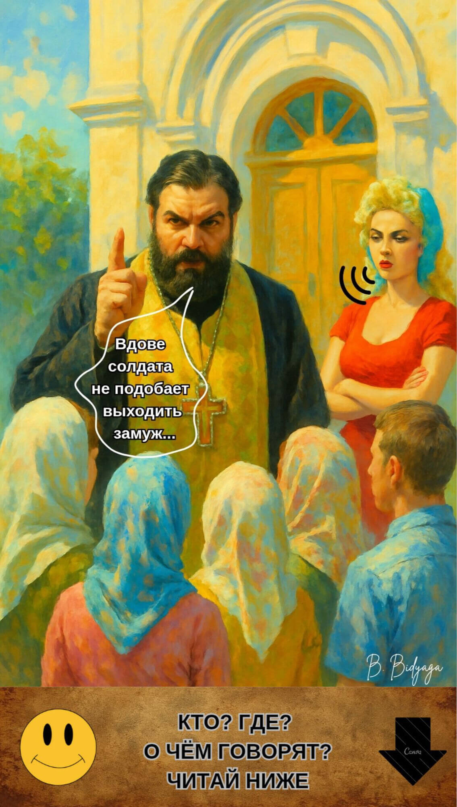
В российском городе священник проповедует у входа в православный храм.
Священник:
— Вдове солдата не подобает выходить замуж! Пришла похоронка — скорби и молись!
Женщина из толпы:
— Размечтался! Ваших гробовых едва хватает на белую Ладу. А я хочу красную Вольво! С баром!
#ПравославныйВоенныйПутинизм
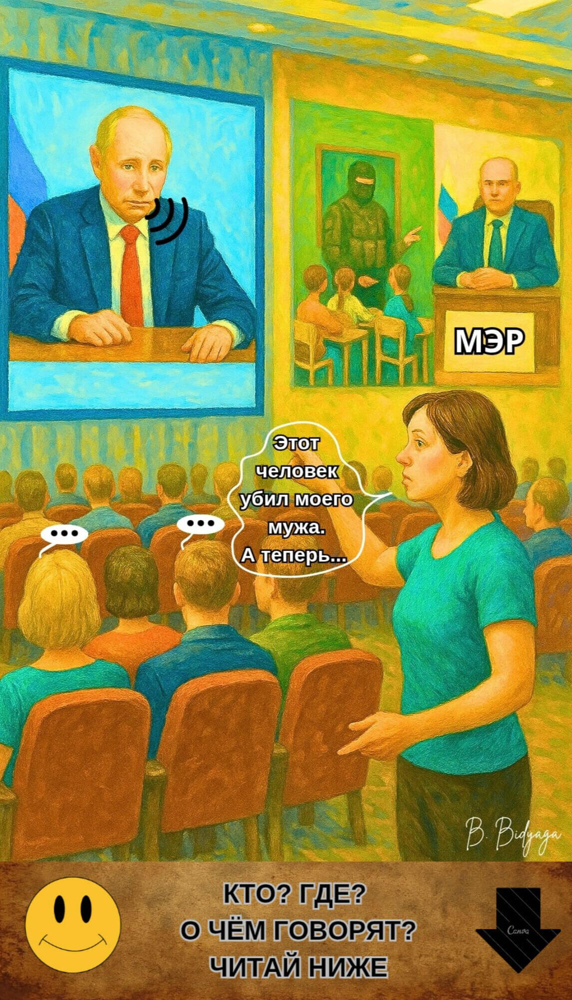
"Прямая Линия" президента России Владимира Путина. Он отвечает на вопросы граждан по видеосвязи. В зале сидят приглашенные.
Женщина из зала (указывая на портрет чиновника):
— Этот человек убил моего мужа. А теперь он учит детей мужеству и занимает пост мэра нашего города. Почему?
Путин:
— Он искупил свою вину на фронте. Он заплатил за прошлое своей кровью. Он — герой, наша новая элита.
Первый зритель (скрывающий лицо):
— Убил 100 украинцев — прощён...
Второй зритель (скрывающий лицо):
— Убивай, грабь, насилуй! Полгода на войне всё спишут...
#ПравославныйВоенныйПутинизм
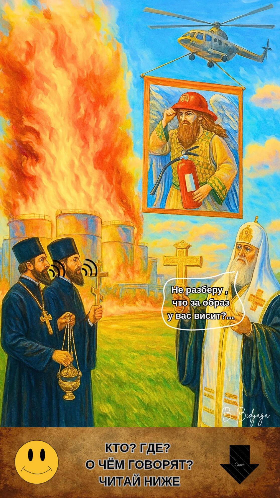
Российская провинция. На фоне полыхающего нефтехранилища два православных священника беседуют с патриархом.
Патриарх:
— Не разберу, что это за образ у вас висит?
Первый священник:
— Это Сварожич — славянский бог огня. Помогает отлично!
Второй священник:
— Христос-то нас оставил...
Патриарх:
— Неужели помогает?! Х-м-м... Тогда вот что. Прикроем ересь язычества фиговым листком... Образ Сварожича оставим, а икону назовём "Святой Николай Огнеборец".
#ПравославныйВоенныйПутинизм
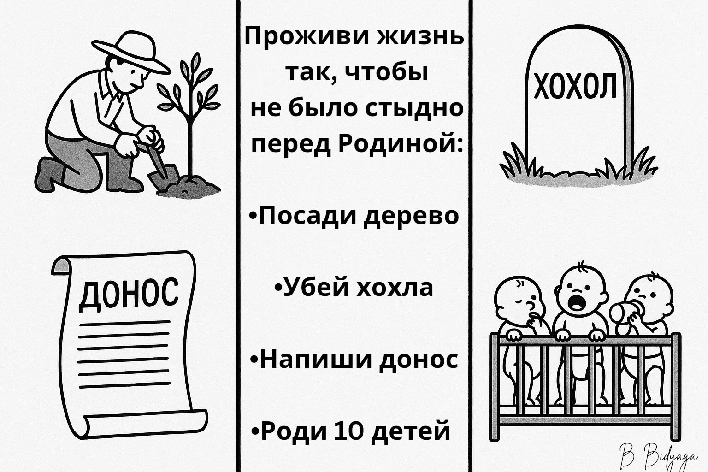
Проживи жизнь так, чтобы не было стыдно перед Родиной:
• Посади дерево
• Убей хохла.
• Напиши донос
• Роди 10 детей
#ПравославныйВоенныйПутинизм
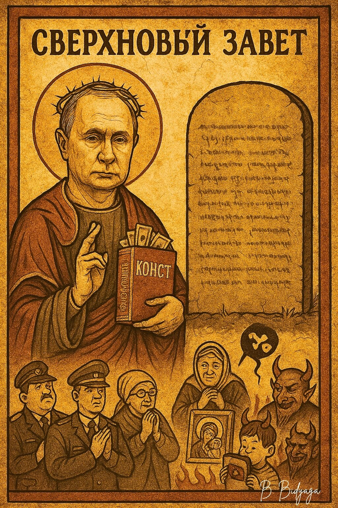
1. Возлюби Путина твоего всем сердцем твоим, всем разумением твоим, всей душою твоей.
2. Возлюби ближнего твоего: начальника, депутата, налогового инспектора.
3. Не убий: государственного деятеля, сотрудника правоохранительных органов.
4. Не прелюбодействуй в презервативе.
5. Не лжесвидетельствуй ради собственной выгоды — только на благо Отечества.
6. Не расточай семя впустую — делай детей.
7. Не укради — это прерогатива государственного чиновника.
8. Не ищи себе сокровищ на земле — их уже оприходовали.
9. Кто злословит на Володина и Матвиенко — достоин смерти.
10. Не поддавайся дьявольскому искушению в обличье иноагента и пятой колонны.
11. Блаженны доносители, ибо их есть царствие земное. Стучите — и услышаны будете.
12. Люби Родину — особенно на госзакупках.
13. Воздерживайся от сомнений: вера в телевидение спасёт тебя.
14. Избегай слов "свобода" и "мир", ибо сие есть ересь.
15. Не сотвори себе кумира вне вертикали власти.
Да пребудет с тобой лояльность — и ты не пропадёшь в темнице.
Из «Откровения от Роскомнадзора», гл. 666.
#ПравославныйВоенныйПутинизм
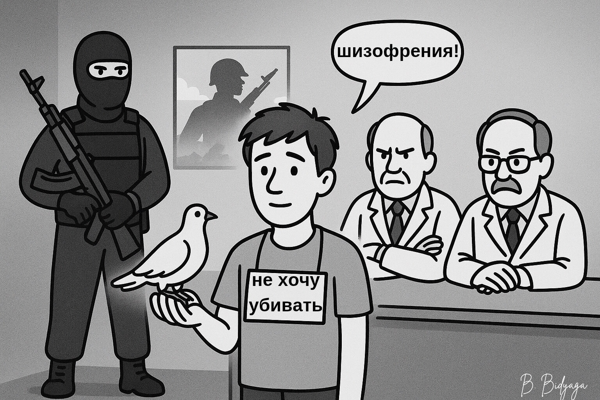
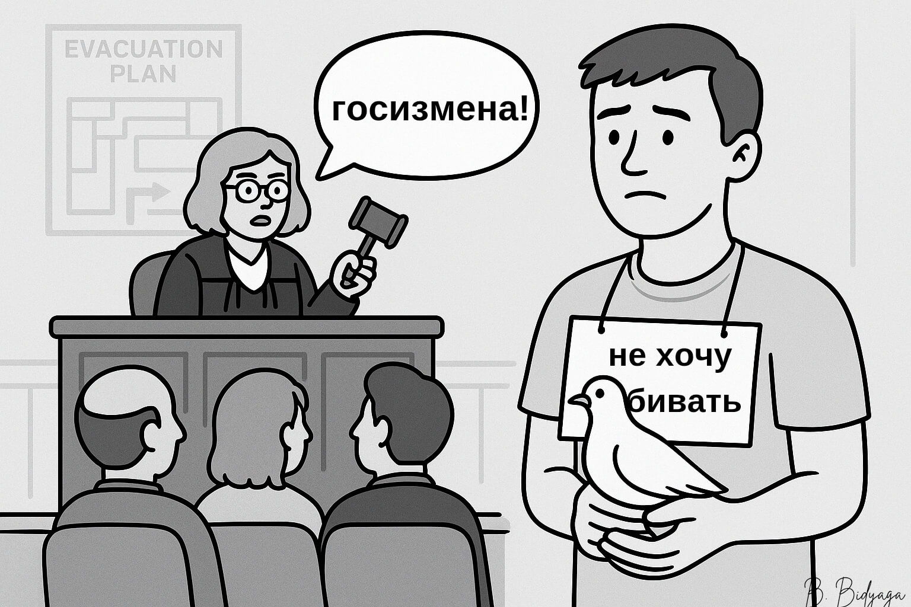
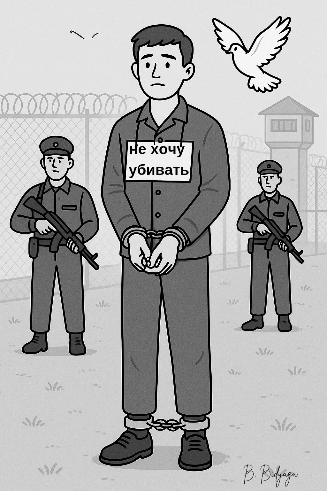
Триптих:
Панель 1:
В российском военкомате.
Диагноз: шизофрения.
Панель 2:
Российский суд.
Вердикт: госизмена.
Панель 3:
Исправительная колония для пацифистов, Россия.
#ПравославныйВоенныйПутинизм
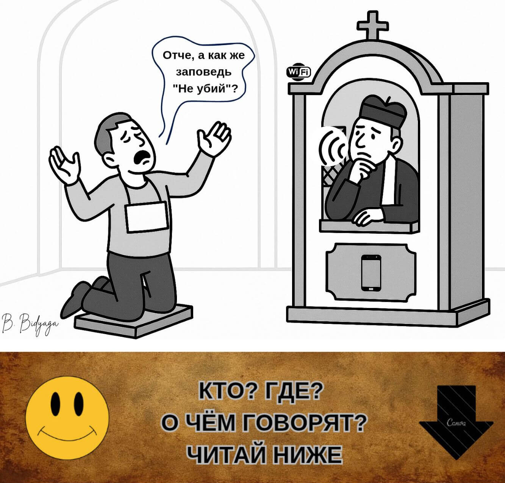
Россия. Исповедальня в православном храме.
Кающийся грешник:
— Отче! А как же заповедь "Не убий"?
Священник:
— Устаревшая версия, сын мой! Обнови прошивку. Последняя версия — "ukrainy.net"
#ПравославныйВоенныйПутинизм
Патриарх всея России стоит на носу своей супердорогой яхты. Возле яхты в утлой лодочке сидят два рыбака.
Рыбак:
— Отче, а почему вы не отдадите Вашу яхту убогим и бедным — как завещал Иисус Христос?
Патриарх:
— Христос проповедовал исключительно беднякам. Богатым он своими советами не докучал.
#ПравославныйВоенныйПутинизм
Школа в российском городе. Урок семьеведения. На доске — график динамики рождаемости в России.
Ученица:
— Я не помню...
Учительница:
— Не выучила урок? Не страшно! Иди, деточка, рожай — получишь пятёрку! А родишь двойню — зачтём как практикум по анатомии. Тройня — аттестат зрелости досрочно. Больше в школу ходить не придётся.
#ПравославныйВоенныйПутинизм
Экспозиция в Музее Исторических Параллелей. На стене — три парадных портрета:
• Царь Николай II — "Николай II"
• Григорий Распутин — "Раз-Путин"
• Владимир Путин — "Два-Путин"
Комментарий:
История повторяется, на этот раз — в жанре психоабсурда.
Путин I (версия 1.0)
Финал: цианистый калий, пуля в лоб.
Год: 1916.
Путин II (версия 2.0)
Финал (в разработке):
• 30% — табакерка
• 30% — шарфик
• 30% — «Новичок»
• 10% — заказной инфаркт
Год: 202Х
#ПравославныйВоенныйПутинизм
Добрый доктор Айболит,
Он под деревом сидит.
Приходите в кабинет
И ефрейтор, и корнет.
Всех излечит-исцелит
Добрый доктор Айболит.
И пришёл к Айболиту Муса:
«Ой, меня расстреляла "Оса"».
И пришёл к Айболиту "Портос":
«Меня с дрона шарахнули в нос».
И прибежала радистка
И закричала: «Беда!
Мой Вася, мой мальчик,
Ступил не туда.
Он бежал по минной дорожке,
И ему раскурочило ножки.
И теперь он больной и хромой,
Бедный сынулечка мой».
И сказал Айболит: «Не беда.
Подавай-ка его сюда.
Я пришью ему новые ножки —
Пусть шагает по минной дорожке!»
И принесли к нему Васю —
Такого больного, хромого.
И доктор пришил ему ножки —
И Вася стреляет снова.
А с ним и радистка-мать
Тоже пошла танцевать.
И стреляет она, и кричит:
«Ну спасибо тебе, Айболит!»
Вдруг с востока "Аксакал"
На кобыле прискакал.
"Вот вам срочное посланье.
Прочитайте. До свиданья".
"Приезжайте, доктор,
В Жмеринку скорей.
И спасайте, доктор,
Наших корешей".
"Что такое? Неужели
Ваши парни заболели?"
"Да-да-да, у них судимость,
Слёзы, пот, непроходимость.
Если вы их не спасёте,
Мы утопим их в болоте.
Ибо Путин дал приказ:
Выдвигаться на Кавказ".
Море, солнце и Памир —
Ждёт спасенья "Русский Мир"!
"Русский Мир" теперь навечно —
Грязь, болота и пески —
Где зелёных человечков
Оттоптались башмаки.
#ПравославныйВоенныйПутинизм
Биологически активные добавки информационные. Повышают биодоступность государственной пропаганды до 100%.
Активные компоненты эффективно преодолевают гемато-энцефалический барьер (критического мышления).
Линейка препаратов:
• Глюкофейконат Соловьева, таблетки 100-500 мг, пролонгированного действия. Не разжёвывать!
• Суррогатная инфо-микстура "Москва. Кремль. Путин", нормализованная.
• Бальзам "Симулякры христианства" с ароматом ненависти, для наружного применения. Условно ядовитый.
• Спиртовая настойка "Традиционные ценности", многокомпонентная. Мутная взвесь с трупным запахом. Крепость 40%.
• Фактозаменитель от Симоньян, порошок для суспензии. Галлюциногенный, со вкусом агрессии.
• Эрзац-истории от Мединского, набор инъекций в/м, 100-500 мг. Версии 1.0-10.0.
• Фальш-вести от Киселева, суппозитории супернежные с эффектом ректально-информационного зуда. 100-500 мг.
• Бифилак-Инфо, 100-500 мг. Препарат группы ферментов (бифидо-лакто-инфо-бактерии). Способствует эффективному перевариванию фейковой информации, предотвращает несварение и констипацию.
Фармакологическое действие:
• Стимуляторы лояльности: возбуждают центры покорности и стадного инстинкта.
• Агонисты ненависти: стимулируют миндалевидное тело (центр страха и агрессии). Потенцируют выработку норадреналина, направляя агрессию на внешнего врага, конструктивно снимая внутреннее социальное напряжение.
• Ингибиторы анализа: подавляют активность префронтальной коры, отвечающей за критическое мышление и логику.
• Блокаторы эмпатии: дезактивируют островковую долю и переднюю поясную кору, подавляя все формы эмпатии и сопереживания.
Не являются лекарственным средством.
Состав стандартизованный:
Фейки — 50%
Глюки — 20%
Пустые мечтания — 10%
Самообман — 5%
Вспомогательные вещества:
Личная жизнь президента США, звёздные сплетни, погода в Африке, НЛО.
Ароматизаторы (на выбор):
Великодержавный шовинизм, ультраправый национализм, ура-патриотизм, обыкновенный фашизм, слепая ненависть, "Обама-чмо", "гнилой Запад", "священная война".
(Приу)красители:
"Ценности традиционные" отборные, "скрепы духовные" усиленные, "жить стало лучше, жить стало веселей", "радиоактивный пепел", "мы победим".
Способ употребления и дозы:
Суточная доза рассчитывается по формуле:
IQ * 10 мг. Максимальная суточная доза — 1300 мг.
Рекомендован ежедневный прием перед выпуском вечерних новостей, телеэфирами В. Соловьева и М. Симоньян, итоговой программой Д. Киселева "Вести недели", "прямой линией" Путина, брифингами Д. Пескова и Минобороны РФ.
С осторожностью:
Синдром гиперлояльности, сапионедостаточность. При острых приступах здравого смысла, сомнениях в правильности государственного курса и других формах резистентности к пропаганде рекомендована форма "Форте".
Контроль жизненных показателей:
Уровень глюков не должен превышать уровень глюкозы.
Побочные эффекты:
Патриотический делириум, славословный понос, неукротимая рвота с вкраплениями лозунгов. В редких случаях развивается идеологический тромбоз, приводящий к острой недостаточности когнитивных функций.
Допускается преходящий мутный осадок (в душе).
Во избежание побочных эффектов дозу увеличивать постепенно! Не превышать дозировку!
Особые указания:
Приготовление суспензии: взять 1/2 стакана из любого мутного источника, добавить 1 чайную ложку порошка и перемешать. Внимание: требуется тщательное забалтывание!
Максимальная биодоступность достигается в состоянии контролируемого отупения.
Препараты не являются ноотропами! Не улучшают когнитивные функции, но приводят их в соответствие с государственной идеологией. При случайном попадании в организм независимого журналиста или правозащитника могут вызвать острую аллергическую реакцию.
Срок годности:
Не ограничен.
#ПравославныйВоенныйПутинизм
Консилиум в психиатрической больнице. В кабинете за столом — 3 маститых профессора.
Первый профессор:
— Пациент утверждает, что он — Мессия.
Второй профессор:
— Как?! Мессия?! Вчера же был Гитлер!
Третий профессор:
— Сегодня у него новая миссия: «Спасти украинский братский народ».
Первый профессор:
— И как он собирается это сделать?
Второй профессор:
— Как обычно: бомбардировки, убийства, похищения.
Третий профессор:
— Параноидальный геополитический бред с манией величия ...
Первый профессор:
— Бред... сивой кобылы при лунном свете.
Второй профессор:
— Коллеги, обойдёмся без лирики. Специфическое расстройство личности.
Третий профессор:
— А ещё плачет, говорит: «Украина для нас — боль и трагедия».
Первый профессор:
— И всё время талдычит про какие-то "первопричины конфликта", которые "необходимо устранить".
Второй профессор:
— И каждые пять минут истерично выкрикивает: "Хочу весь Донбасс!"
Третий профессор:
— А в остальном — весел, бодр, активен, намедни встречался с этим... персонажем... в красной кепке...
Первый профессор:
— А-а, пресловутый "пожарник", одним взглядом останавливающий военные конфликты?
Второй профессор:
— Он самый. Целых 11 секунд жали друг другу ручки, после расхаживали по красной дорожке, безбожно флиртовали и подмигивали.
Третий профессор:
— Два сапога пара, прости Господи! Один бредит Донбассом, другой — Нобелевкой.
Первый профессор:
— Да-с, господа. Тщеславие — вещь опасная. Может закончиться психо-политическим расстройством.
Второй профессор:
— Коллеги, мне кажется, налицо конфликт интересов. Ни к чему хорошему это не приведёт.
Третий профессор:
— Для Украины — уж точно.
Первый профессор:
— Вы правы. Необходимо принять меры.
Второй профессор:
— Предлагаю кратно увеличить дозу галоперидола. Перорально и внутримышечно.
Третий профессор:
— Желательно также назначить пациенту успокоительные чернозёмные ванны под аудиозапись с криками "Крым наш!"
Первый профессор:
— А почему бы не попробовать электрошок? Отлично действует при специфических расстройствах. Минздрав же дал зелёный свет.
Второй профессор (с пафосом):
— Минздрав предупреждает... Будете буянить — получите три тысячи вольт в задницу.
#ПравославныйВоенныйПутинизм
Проповедь перед православным храмом в российском городе.
Священник:
— Зачем сливаете семя в унитаз? Это непростительный грех. Женское лоно — вот единственный подобающий сосуд для семени!
Мужчина из толпы:
— Лоно? Да оно всё время закрыто. На учёт. Яйцеклеток. Только для VIP-членов.
Священник:
— Не богохульствуй, сын мой! Лоно — это не склад консервов!
Женщина из толпы:
— VIP-члены? Это ФСБ, что ли?
#ПравославныйВоенныйПутинизм
На улице российского города полицейский остановил прохожего.
Картина 1
Полицейский:
— Почему пуговицы на штанах разноцветные? ЛГБТ-пропаганда. Штраф!
Мужчина:
— Не надо штраф! Я их сейчас срежу...
Картина 2
Мужчина (без штанов):
— Ой! Простите! Я не хотел!
Полицейский:
— Ага! Хохляцкий флаг на ж...пе? Дискредитация... органов!
#ПравославныйВоенныйПутинизм
Россия. Исповедь грешника в православном храме.
Грешник:
— Грешен я, батюшка! Я — пофигист!
Священник:
— Ты — пацифист? Это большой грех, сын мой!
Грешник:
— Нет, Отче, Вы не так поняли. Я — эксгибиционист.
Священник:
— Экс-ГБ-сионист? Ступай с богом, сын мой. Все мы из ГБ... А почему "экс"?
Грешник:
— Каюсь, Отче! Ведь я вчера показывал член в парке...
Священник:
— Ты — член партии? Единая Россия, надеюсь? Алилуйя! С нами Бог!
Грешник:
— Каюсь, Отче! Ведь я делал это на детской площадке. Там были дети...
Священник:
— Раннее приобщение к духовно-нравственным ценностям? Блестящая идея, сын мой. Ступай с миром!
#ПравославныйВоенныйПутинизм
Россия, Москва. Зал заседаний Госдумы РФ. С трибуны выступает депутат Валентина Бебиенко:
— Уважаемые депутаты! Президент поставил перед нами задачу возродить великую Россию — увеличить рождаемость в три раза. Не скрою — задача непростая. Сложная задача. Суперсложная. Но мы обязаны ее выполнить. Потому что этого хочет наш президент. Предлагаю подойти к решению проблемы креативно. Разумеется, наша таргетная аудитория — это молодежь. До 30. После 30 воздействовать на сознание уже не так просто. Ментальные паттерны уже сформированы, наблюдается резистентность к госнарративу.
А теперь давайте вспомним наше с вами печальное детство. Как мы удовлетворяли свои... потребности — вполне законные позывы пубертатного периода? Тайком, украдкой, в темных подъездах на грязных подоконниках, в сырых подвалах, на пыльных чердаках, да и просто, прости Господи, в парке за кустом. И все время в напряжении: а вдруг увидят? А вдруг соседи нажалуются? А если, не дай бог, тебя застукали — тащат в милицию, составляют протокол, звонят родителям. Одним словом, позор на всю оставшуюся жизнь. Это неправильно, товарищи. Это противоречит государственной политике в области демографии.
Давайте исправим этот перекос. Давайте дадим нашим детям и внукам счастливое детство. Как раньше на каждом углу стояла телефонная будка — так теперь на ее месте будет стоять красивый и опрятный "павильон репродукции". С камерами наблюдения для распознавания лиц — будем начислять участникам социальные бонусы на "Госуслугах". Внутри — просторная комната на 4 двуспальные кровати, большой телевизор на стене. Фильмотека с вдохновляющими роликами и сериалами. Шкафчик с Виагрой и аксессуарами. Все культурно, чисто и привлекательно — от весёленьких обоев на стенах до постельного белья с игривым рисунком. А на ступеньках вместо швейцара — батюшка, окропляющий входящих святой водой, ещё и с благословением:
"Блаженны совокупляющиеся... во имя Отца и Сына, и Святого Духа, и в соответствии с Указом Президента №666..."
А по прошествии девяти месяцев в автоматическом режиме будет проводиться оценка эффективности. В случае подтверждённого рождения ребёнка родителям выплачивается вознаграждение. В случае рождения мальчика — выплата удваивается, в рамках государственной программы милитаризации демографической политики.
#ПравославныйВоенныйПутинизм
Неоконченная микропьеса
Семеро мальчиков играют в Песочнице:
Хулиган, Еврей и ещё пятеро. Каждый мальчик — особенный, у каждого на голове уникальный головной убор: красная кепка, белая кепка, панама, фуражка, шляпа.
ДЕЙСТВИЕ 1
Мальчики в Песочнице
Шляпа:
— А у нас новость! Хулиган опять затеял драку.
Белая кепка:
— С кем на этот раз?
Шляпа:
— Еврей.
Белая кепка (строго):
— Хулиган, прекрати немедленно! Недопустимо нарушать в Песочнице порядок!
Хулиган:
— А ты кто такой, чтобы мне приказывать?
Белая кепка:
— Я — староста по Песочнице. Я — моральный авторитет.
Хулиган:
— А я — криминальный авторитет. Мне плевать на ваши порядки. У меня особый путь и особые моральные ценности.
Фуражка (осторожно):
— Да из-за чего драка-то? Что не поделили?
Хулиган:
— Он захапал мою землю!
Белая кепка:
— С каких это пор она твоя?
Хулиган:
— Всегда была моя. Там прах моего прадедушки!
Шляпа:
— Но мы же договорились о нерушимости границ! Твой дядя Борис поставил свою подпись!
Хулиган:
— Борис был дурак и алкоголик. В силу этого сделка объявляется ничтожной! Это моя земля. Конец дискуссии.
(Хулиган подходит к Еврею и бьёт его кулаком в грудь.)
Еврей:
— Помогите! Убивают!
Шляпа:
— Держись, малыш! Сейчас примем Резолюцию. Первое. Мы всецело осуждаем эту агрессию! И призываем все стороны к сдержанности.
Панама:
— Второе. Мы признаем законное право Еврея защищать свою территорию любыми средствами.
Фуражка:
— Третье. Мы призываем Хулигана соблюдать установленный порядок и немедленно прекратить конфликт.
Белая кепка:
— Может, всё-таки окажем ему помощь?
Хулиган (делая страшное лицо):
— Только попробуй! Получишь в глаз!
Шляпа:
— Подобные заявления недопустимы! Лично у меня они вызывают беспокойство.
Фуражка:
— И озабоченность.
Панама:
— Парни, с ним надо поосторожней. Не забывайте: у него есть бульдозер.
Хулиган:
— Вот именно! Пригоню бульдозер и разнесу всю Песочницу в щепки!
(Наносит Еврею ещё один удар.)
Еврей (шёпотом):
— Убивают!
Шляпа:
— Моё беспокойство многократно усилилось.
Фуражка:
— Моя озабоченность растет по экспоненте.
Белая кепка:
— Я слышал, что этот его пресловутый бульдозер весь проржавел и не заводится.
Панама (с сомнением в голосе):
— Мы точно не знаем, а вдруг он его починил и установил новые свечи?
Шляпа:
— Надо проявлять осмотрительность. Не будем его злить.
Панама:
— Но ведь ясно: как только он прикончит Еврея, он нападет на нас с вами!
Фуражка:
— Я, конечно, от него чуть подальше, и через пролив, но все равно коленки дрожат от страха. Давайте вот что: будем Еврею помогать, но понемножку и тайно. Тогда Хулиган ничего не заметит.
Панама:
— Главное — не давать слишком много. Если Хулиган начнет терять позиции, он разозлится. И тогда уж точно пригонит свой бульдозер и сравняет с землёй всю Песочницу.
Шляпа:
— Правильно. Пускай сражаются. Пока Хулиган занят этой дракой, мы можем спать спокойно.
Белая кепка:
— Отличный план. Так и сделаем.
ДЕЙСТВИЕ 2
Новый староста
К Песочнице подходит мальчик в красной кепке и с клюшкой для гольфа в руках.
Красная кепка:
— Ну, что тут у вас? Развели бардак. Всё ты, глупый старикашка. Выметайся из Песочницы! Твое время вышло. Я теперь староста.
Белая кепка:
— Хорошо. Я ухожу. Сделал все что мог. Удачи тебе с этим конфликтом!
Красная кепка:
— Я пришел не для того, я пришел, чтобы получить Золотую медаль Миротворца. Ты, со своими глупыми указами, только разжигал эту драку. Я пришел, чтобы ее остановить. Ты дурак, а я умный. В этом вся разница между нами. Уходи и не мозоль мне глаза.
(Белая кепка уходит.)
Еврей (с надеждой глядя на нового старосту):
— Ты ведь поможешь мне, правда?
Красная кепка (сурово):
— Столько юношей полегло! Красивых, прекрасных юношей! И всё — из-за тебя. Зачем ты позволил втянуть себя в этот конфликт?
Еврей (ошарашенно):
— Я позволил?! Да ведь он первый начал!
Красная кепка:
— А ты что, не видел, что он в тысячу раз сильнее тебя? Нормальный человек не полезет в драку с превосходящими силами противника. Надо было сразу договариваться, а не разжигать конфликт.
Еврей:
— Но не мог же я отдать ему землю! Мне конституция не позволяет.
Красная кепка:
— Не морочь мне голову! У тебя нет карт. Не отдал тогда — отдашь сейчас. Сейчас не отдашь — отдашь через год. Один черт. Только ещё полмиллиона красивых мальчиков лягут в могилу.
Еврей:
— Но это же несправедливо! Ты бы лучше помог мне его победить.
Красная кепка:
— Старик тебе сколько помощи дал? Миллиарды монет. Ты даже "спасибо" не сказал. Только клянчишь и клянчишь. И потом — где это всё? Куда подевались эти миллиарды?
Еврей:
— Мне стыдно признаться, но их немножко разворовали. Так получилось. Я не виноват!!!
Красная кепка:
— Все эти миллиарды ты должен мне вернуть. Я слышал, на твоей делянке обнаружены большие запасы редкоземельных металлов? Теперь они принадлежат мне.
Еврей (взволнованно):
— Это грабеж!
Красная кепка:
— А ты хотел на халяву прокатиться? Так дела не делаются. Ставь свою подпись.
Еврей:
— Но я не уполномочен. Нужна санкция парламента...
Красная кепка:
— Ах так! Эй, Стив, позвони ребятам — пусть придержат наши разведданные.
Еврей (в отчаянии):
— Только не разведданные! Умоляю!
Красная кепка:
— Так ставишь подпись или нет?
Еврей (подавленно):
— Ставлю.
ДЕЙСТВИЕ 3
Те же лица
Красная кепка:
— Итак, начинаем мирный процесс. Я требую, чтобы эта драка прекратилась. Хулиган, твои условия.
Хулиган:
— Он должен отдать мне два региона. И выкинуть в помойку половину своих солдатиков. И отказаться от вступления в военные блоки.
Красная кепка:
— Х-м... Недурно. Еврей, ты согласен?
Еврей (твёрдо):
— Только через мой труп.
Хулиган (со злорадной усмешкой):
— Это можно устроить.
Красная кепка:
— Прекратите ваши шуточки! Еврей, в чем дело?
Еврей:
— Он хочет, чтобы я отдал ему землю без боя. Это же нонсенс! В военной истории нет таких прецедентов.
Красная кепка:
— Зачем тебе столько земли? У тебя половина населения эмигрировала.
Еврей:
— Я не могу. Общество против добровольной сдачи территорий.
Красная кепка:
— Эй, Стив! Придержите наши разведданные!
Еврей (поспешно):
— Хорошо, хорошо. Я согласен, но требую тщательной проработки деталей.
Красная кепка:
— Что насчёт солдатиков? И отказа от военных блоков?
Еврей:
— В этом случае мне нужны твердые гарантии безопасности — на случай если Хулиган снова покусится на мои земли. Кто меня защитит? И каким образом?
Красная кепка:
— Гарантии я даю тебе лично: в случае повторной агрессии мы... что-нибудь придумаем. Гарантия — 100%.
ДЕЙСТВИЕ 4
Те же лица
Красная кепка:
— Я делаю все возможное, чтобы помирить этих драчунов. Я перепробовал все средства. Но мирный процесс почему-то буксует.
Фуражка:
— Ты самый лучший переговорщик — строгий, но справедливый. Можно я буду называть тебя "Папочкой"?
Шляпа:
— Идеальное прозвище! Папочка! Мы восхищены твоим искусством дипломатии! Однако нельзя не заметить, что ты давишь на Еврея, а Хулигана в его требованиях всецело поддерживаешь.
Панама:
— Папочка! Мы бы рекомендовали оказать давление также и на Хулигана — например, ты мог бы дать Еврею оружие. Ты ведь обещал! Но почему-то не даёшь...
Шляпа:
— Видимо, Папочка боится Хулиганского бульдозера.
Красная кепка:
— Бульдозер — блеф. Хулиган берёт нас на понт. Бульдозера я не боюсь. А вот чего я действительно опасаюсь, так это того что он подкрадется сзади, плеснет мне на штаны бензина и подожжет.
(Шляпа, Фуражка и Панама многозначительно переглядываются и нервно хихикают.)
Красная кепка:
— Чего смеётесь? Ваши штаны уязвимы перед ним в неменьшей степени, чем мои! Так что советую хорошенько подумать, прежде чем давать Еврею оружие. Лично я умываю руки.
Фуражка:
— Ну тогда ты мог бы ввести против Хулигана вторичные санкции.
Красная кепка:
— Санкции — это вопрос спорный. Во-первых, я не хочу его отпугивать от переговоров. Сейчас Хулиган идёт мне навстречу, и это надо ценить. А во-вторых, у него самые большие в мире запасы редкоземельных металлов. Зачем мне с ним ссориться, если я намерен, после заключения мира, торговать и совместно осваивать эти уникальные месторождения? И вообще: мои личные добрые отношения с Хулиганом — это залог будущего мира в Песочнице.
(Пауза.)
Красная кепка:
— А вот вы трое — к вам у меня большие претензии! Вы что — думаете, я вас буду спасать, когда Хулиган на вас набросится? Даже не надейтесь. Хватит сидеть у меня на шее! Вы большие мальчики и должны научиться сами себя защищать. Вам необходимо увеличить расходы на оборону до 5 процентов ВВП. Это приказ!
И прекратите эту дурацкую иммиграцию! Вы только посмотрите на себя в зеркало, до чего вы себя довели. Куда подевалась вся ваша аристократичность, моральные ценности, вера? Вы собственными руками уничтожаете свою идентичность. Если и дальше дело так пойдет — нашей дружбе придет конец!
ДЕЙСТВИЕ 5
Те же лица
Красная кепка:
— Итак, резюмирую. Тринадцатый раунд переговоров сорвал Еврей — вынудив меня выгнать его из Овального кабинета. Четырнадцатый раунд сорвал Хулиган, потому что, видите ли, его борт номер один заблудился в лабиринте облаков.
Хулиган (небрежно):
— Так оно и было — Еврей вырубил мне все навигационные приборы!
Красная кепка:
— Ладно, проехали! Давайте назначим дату нового раунда. И чтобы без глупостей! Предлагаю следующий четверг.
Еврей:
— Не получится — у меня Шабат.
Красная кепка:
— Тогда пятница.
Хулиган:
— В пятницу распяли Христа.
Красная кепка:
— Тогда суббота, воскресенье, понедельник...
Хулиган (отрицательно качая головой):
— По всей стране объявлен трёхдневный траур...
Красная кепка (в ярости):
— Тогда сегодня! Сейчас! Сию минуту! Я требую, чтобы вы помирились! Садитесь за стол переговоров!
(Красная кепка достает из-за спины складной столик и два стула.)
Красная кепка:
— Милости просим! Присаживайтесь!
Хулиган:
— Ну вот! Мой стул куда-то подевался. Это прямой саботаж переговорного процесса. Я не могу вести переговоры стоя!
Еврей:
— А от моего стула отломилась ножка! Это всё Хулиган, его выходки!
(Размахивает в воздухе ножкой от стула.)
Красная кепка: (устало, с мученическим выражением на лице):
— Пятнадцатый раунд переговоров окончен. Диалог был продуктивным, но трудным. Ждём с нетерпением следующей встречи. Есть хороший шанс достичь соглашения до Дня Благодарения.
#ПравославныйВоенныйПутинизм
Февраль 2026 года
Россия, Москва, Кремль. В кабинете за столом: российский президент Владимир Путин и помощник президента Николай Патрушев.
Путин:
— Мне вчера доложил министр, что мы запускаем по хохлам две тысячи дронов в неделю. Мы методично разрушаем их энергетическую инфраструктуру, тепловые сети и водоснабжение. Целые кварталы сидят без газа, воды и света. По-моему, мотивация отличная. И что? Как на это реагирует украинское общество?
Патрушев:
— По данным разведки, в украинском обществе нарастают злоба и ненависть.
Путин (довольно потирая руки):
— Ну и насколько упал рейтинг Зеленского?
Патрушев (мрачно):
— Их ненависть направлена не на Зеленского, а на нас.
Путин:
— Это потому что мы их недостаточно сильно прижали. Когда вопрос будет стоять о жизни или смерти, они сломаются. Приказываю задействовать наше секретное оружие.
Патрушев:
— Мы его УЖЕ задействовали. С первых чисел декабря. Таких морозов в Украине не фиксировали за всю историю наблюдений. Вам разве не докладывали? Два месяца температура стабильно держится на 10-15 градусов ниже климатической нормы. Батареи в квартирах лопаются, ремонт вынужденно откладывается до весны. Можете мне поверить, в Украине стоят настоящие арктические холода.
Путин:
— И они готовы это терпеть? Глупцы! Ради чего? Ради нескольких разрушенных городов Донбасса? Ради десятка гектар разоренной земли?
Патрушев (с досадой):
— А черт их знает, этих хохлов, чего им надо! Наверное, они там все с ума посходили от этой войны. Когда захватим Донбасс, надо будет всех местных пропустить через фильтрационные психиатрические лагеря. Вправить людям мозги, успокоить нервы. Галоперидол живо приведёт их в чувство.
Путин (со вздохом):
— Украину придумал Ленин, это общеизвестный факт. А вот кто её заселил этими злобными неадекватными существами?
#ПравославныйВоенныйПутинизм
СЦЕНА 1:
Россия. Ресторан на окраине Москвы. За дальним столиком в углу два влиятельных кремлёвских функционера — Михаил М. и Сергей С.
Михаил:
— Ну что, какие новости?
Сергей (мрачно) :
— На фронте полный провал. Наступление захлебнулось. Думаю, скоро фронт посыплется. У них технологическое превосходство, у нас — слишком большая территория. Все понимают, что это край.
Михаил:
— Все, кроме деда. Этот, с позволения сказать, стратег уперся рогом и не остановится, пока весь этот карточный домик не рухнет нам всем на голову.
Сергей:
— Согласен, дед стал токсичным. Но что мы можем сделать? У него десять контуров личной безопасности, а мы все — под тотальным контролем ФСБ. Любая попытка обречена на провал.
Михаил:
— Забавно: по Ленину, революционная ситуация налицо: низы не хотят, верхи не могут... А революции нет и не предвидится.
Сергей:
— Да, низы активизировались. Люди перестали его бояться. Ты только посмотри, что про него пишут в интернете! Сегодня я наткнулся на невероятно смелый текст. Вот, почитай!
(Сергей показывает Михаилу миниатюру "Путин 2.0: спираль истории")
ПУТИН 2.0: СПИРАЛЬ ИСТОРИИ:
Экспозиция в Музее Исторических Параллелей. На стене — три парадных портрета:
• Царь Николай II — "Николай II"
• Григорий Распутин — "Раз-Путин"
• Владимир Путин — "Два-Путин"
Комментарий:
История повторяется, на этот раз — в жанре психоабсурда.
Путин I (версия 1.0)
Финал: цианистый калий, пуля в лоб.
Год: 1916.
Путин II (версия 2.0)
Финал (в разработке):
• 30% — табакерка
• 30% — шарфик
• 30% — «Новичок»
• 10% — заказной инфаркт
Год: 202Х
Михаил:
— Щеглова Ольга — первый раз слышу это имя. Но это же гениально! Ольга попала в самую точку! Только Гришку Распутина вовремя убрали, а этот успел столько дров наломать, что нам эту кашу век расхлебывать.
Сергей:
— У автора есть и другие миниатюры, есть аналитика и расследования. Про COVID-19, про Навального. Убийственная критика. Скандальные разоблачения. Ты почитай, я дам тебе ссылочку. Через VPN, разумеется.
Михаил (возбужденно):
— Отлично! Давай твою ссылку. Кажется, я знаю, как мы можем ее использовать...
СЦЕНА 2:
Россия, Москва, Кремль. В кабинете за столом: российский президент Владимир Путин и кремлёвский функционер Михаил М.
Путин (раздражённо):
— Что за срочное дело? Говорите.
Михаил:
— В интернете про Вас распространяют гнусные тексты. Вот, полюбуйтесь!
(Михаил вставляет флэшку в разъём на панели телевизора, и на огромном экране возникает миниатюра "Путин 2.0: спираль истории")
Путин (с досадой):
— Зачем Вы мне это показываете? Передайте в прокуратуру, пусть разбираются.
Михаил (твердо) :
— Нет, Вы должны это прочитать. Этот текст — смертельная угроза для Вашего рейтинга.
(Путин читает миниатюру; его лицо сначала вытягиваеся от удивления, потом искажается гневом и неприкрытым ужасом.)
Путин (визгливым голосом, спеша и путаясь):
— Это неправда, бред, инсинуация... Я — Путин первый. Я — единственный и неповторимый. Я уникальный. При чем тут Распутин? Это всего лишь буквы, простое совпадение. Сравнить меня с этим безумным старцем?! Назвать меня "Путиным 2.0"?! Назвать меня "второй версией"?! Напророчить мне заговор, государственный переворот?! Не позднее 2029 года?! Да как вы смеете?! Кто это написал? Какой мерзавец это придумал?
Михаил (с притворным сочувствием):
— Да это... одна глупая старуха. Да Вы не переживайте — мало ли кто и что напишет.
Путин (в исступлении):
— Убейте её! Немедленно! Это приказ!
Михаил (с наигранным рвением):
— Конечно. Ребята этим уже занимаются.
Путин (жалобно причитает, глядя на картинку в телевизоре):
— Меня выставили в музее, как экспонат... Как какую нибудь египетскую мумию. Меня списали в утиль, меня выбросили на свалку истории! Да еще напялили на голову какую-то дурацкую пилотку!
(Пауза: Путин умоляюще смотрит на Михаила, ожидая поддержки и слов утешения. Михаил в знак согласия кивает, с преувеличенной поспешностью.)
Путин (с трепетом):
— Кто кроме Вас читал этот... пасквиль? И как на него реагируют мои подчинённые?
Михаил (понижая голос):
— Большинство реагирует адекватно. Но есть и такие, которые смеются...
Путин (истерично):
— Составьте список тех, кто проявил неуважение к Президенту! Чтобы завтра утром был у меня на столе!
Михаил:
— Непременно.
Путин (униженно, отводя взгляд):
— И не надо это никому показывать...
Михаил:
— Но ведь это лакмусовая бумажка. С ее помощью мы выявим всех неблагонадежных.
Путин (подавленно):
— Ладно, выявляйте. И всех сажайте. Только дела шейте по коррупционным статьям. Не хочу, чтобы...
(Пауза.)
Путин (возбужденно):
— И вызовите ко мне начальника охраны. Нам надо срочно усилить протоколы безопасности. На территории Кремля — только рации, мобильники пусть оставляют дома. Транспорт — только служебный, проверенный. Одежда — рабочий комбинезон. Без карманов, без лацканов, без манжет. Каждый день прощупывать по швам и дезинфицировать. Обувь! Что мы будем делать с обувью? Ведь в ботинках они могут пронести черт знает что! И всех подстричь под короткий ёжик — никаких локонов в Кремле я не потерплю!
#ПравославныйВоенныйПутинизм

ACKNOWLEDGEMENTS
Автор выражает глубочайшую признательность Владимиру Путину — бессменному старосте Палаты № 666 — за его вклад в мировую сатиру, за богатейший материал, поставляемый в реальном времени, и за личный пример, как не надо руководить страной.
Отдельное «спасибо» всем его соратникам и соседям по палате: вы — неиссякаемый источник абсурда, гротеска и чёрного юмора. Без вашего самоотверженного служения безумию этот альбом выглядел бы бледно и скучно.
ОСОБАЯ „БЛАГОДАРНОСТЬ“ ГОСУДАРСТВЕННОМУ СЕКРЕТАРИАТУ ПО МИГРАЦИИ (SEM) ШВЕЙЦАРИИ
Вы — моя Муза. Отчаянием и безысходностью пробудившая мой творческий порыв. Ледяным кофе воспламенившая мое вдохновение. Голодным пайком насыщавшая меня блестящими идеями. Бессонными ночами дававшая мне отдохновение.
Без вашего циничного отказа в убежище, обрекшего меня на существование в ледяной палатке, острота этой сатиры, возможно, не достигла бы своей предельной силы.
Если мне вы подарили вдохновение, то моим преследователям — легкую возможность моего убийства. Ваш незаконный отказ в убежище равнодушным росчерком пера превратился в нож в руках исполнителей ФСБ.
Ваши аккуратные параграфы и циркуляры так изящно материализовались в глухом лесу — в виде хруста моих ломающихся ребер и свиста воздуха в пробитом легком. Спасибо, что помогли мне прочувствовать цену вашего «гуманизма» на собственной шкуре — захлебываясь кровью от пневмоторакса в больничной палате. Вы заставили меня писать не чернилами, а адреналином и болью.
Мой кейс номер 858369 станет несмываемым позорным пятном на вашей репутации "самой демократической" страны мира.
© 2025-2026 Ольга Щеглова